Section V - Specialized Applications Methods/Illustrations
Page 151

muca SECTION V SPECIALIZED APPLICATIONS METHODS/ILLUSTRATIONS 5.1 GENERAL Although the application methods and insulation materials discussed in Sections III and IV are basic to most installations, some circum- stances require either; additional material and methods and installation steps, entirely different materials and methods, or simply special atten- tion to certain aspects of tie installation, such as multiple layering, jacketing.
sealing, etc.
Some installations are so specialized that materials, application methods and equipment must be developed specifically for installation.
Examples would be the aerospace industry and some aspects of the nuclear power industry.
These are not covered in this text.
However, the spe- cialized applications included in this section are often encountered by commercial and indusü'ial insulation conü•actors.
They are: I.
Jackets for USDA & FDA Sealed Jacketing Systems.
2.
Noise and Sound Control Insulation Systems.
3.
Refrigeration and Extreme Low Temperature Systems.
4.
Underground Insulation Systems.
5.
Removable and Reusable Insulation Covers.
5.2 USDA& FDA SEALED JACKETING SYSTEMS /PLASTIC JACKETS (PVC, ABS, PVF, Etc.) The United States Department of Agriculture (USDA) has very sp authority concerning materials used in meat and poultry prccr facilities, and the Food and Drug Administration (FDA) has an ext set of standards to be met for other food processing, beverage anzi maceutical facilities.
Design engineers are utilizing the types of jacketing systems which are acceptable to each authority's applicati(0.
The ability of the system to withstand repeated wash downs, resist (Tic:.
ical or bacterial infiltration, and still provide an atractive, "neat and clean" appearance is very important in all of these applications.
{3
Page 152
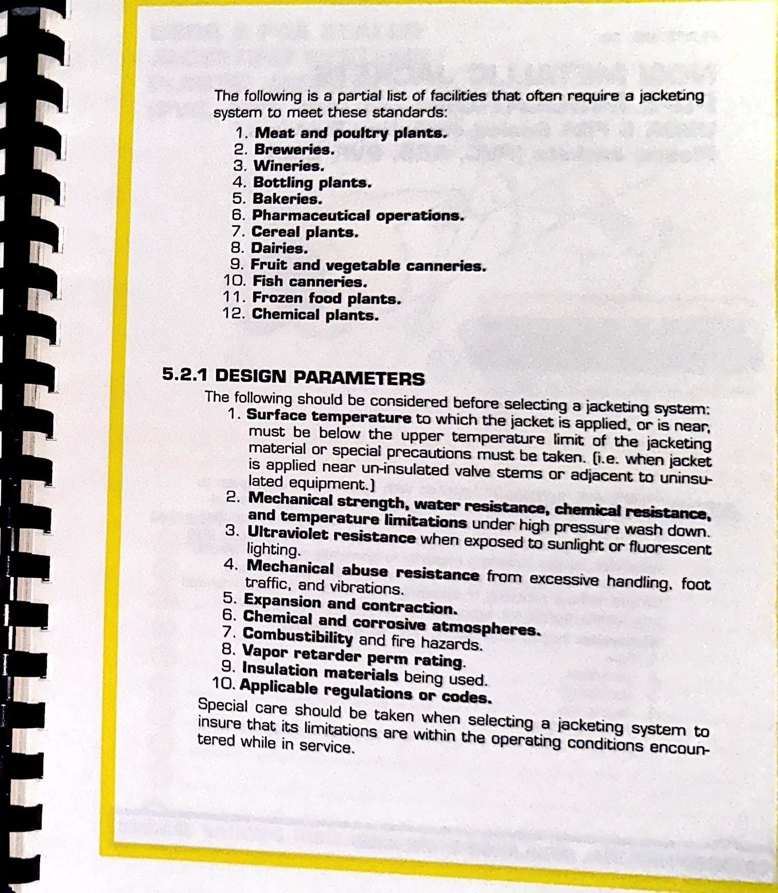
The following is a partial list Of facilities Ü•tat often require a jacketing system to meet these standards: Meat and poultry plants.
I.
Breweries.
2.
3.
Wineries.
Bottling plants.
4.
Bakeries.
5.
Pharmaceutical operations.
6.
7.
Cereal plants.
Dairies.
B.
Fruit and vegetable canneries.
9.
Fish canneries.
IO.
Frozen food plants.
11.
Chemical plants.
12.
5.2.1 DESIGN PARAMETERS The following should be considered before selecting a jackeung system: 1 .
Surface temperature to which the jacket is applied.
or is near.
must be below the upper temperature limit of the jackeung material or special precautions must be taken.
(i.e.
"hen jacket is applied near un-insutated valve stems or adjacent to uninsu- lated equipment.) 2.
Mechanical strength, water chetnical and temperature limitations under high pressure wash down 3.
Ultraviolet resistance when exposed to sunfight or fluorescent lighting.
4.
Mechanical abuse resistance from excessive handling, foot traffic, and vibrations.
5.
Expansion and contraction.
6.
Chemical and corrosive atmospheres.
7.
Combustibility and fire hazards.
8.
Vapor retarder perm rating 9.
Insulation materials being used IO.
Applicable regulations or codes.
Special care should be taken when selecting a jacketing system to insure that its limitations are within the operating conditions encoun- tered while in service.
l..
Page 153
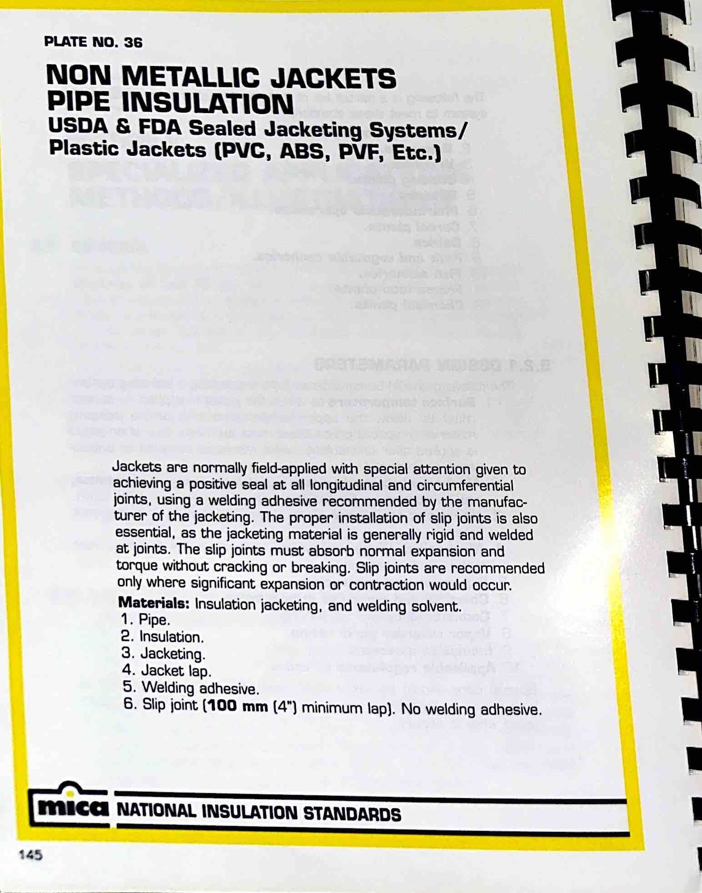
PLATE NO.
36 NON METALLIC JACKETS PIPE INSULATION USDA e FDA Sealed Jacketing Systems/ Plastic Jackets (PVC, ABS, PVF, Etc.) Jackets are normally field-applied with special attention given to achieving a positive seal at all longitudinal and circumferential joints, using a welding adhesive recommended by the manufac- turer of the jacketing.
The proper installation of stip joints is also essential, as the jacketing material is generally rigid and welded at joints.
The slip joints must absorb normal expansion and torque without cracking or breaking.
Slip joints are recommended only where significant expansion or contraction would occur.
Materials: Insulation jacketing.
and welding solvent.
1.
Pipe.
2.
Insulation.
3.
Jacketing.
4.
Jacket lap.
5.
Welding adhesive.
6.
Slip joint (100 mm (4") minimum lap).
No welding adhesive.
muca NATIONAL INSULATION STANDARDS 14S
Page 154
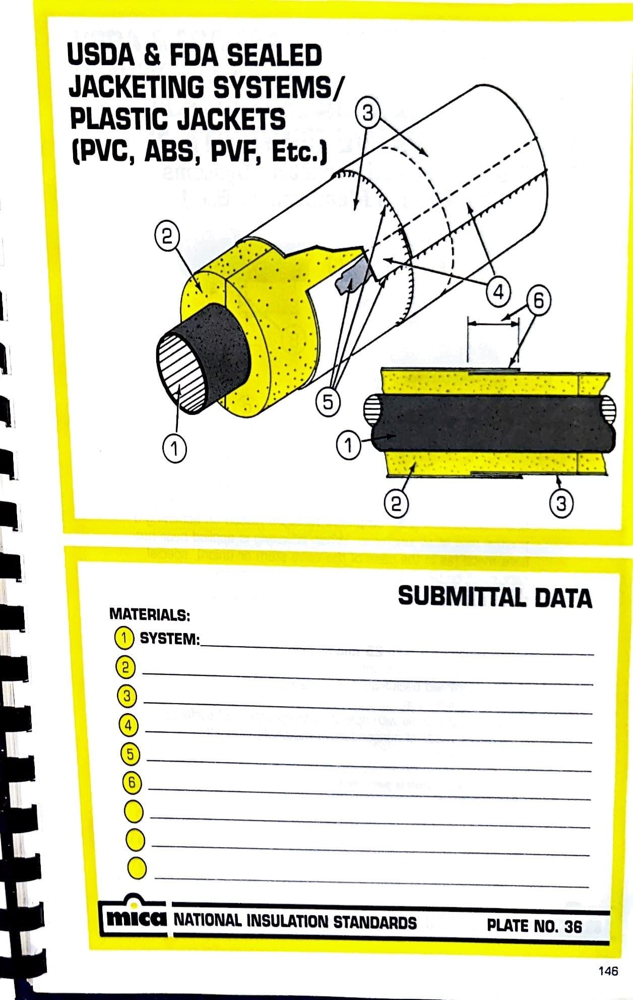
USDA & FDA SEALED JACKETING SYSTEMS/ PLASTIC JACKETS tpvc, ABS, PVF, Etc.) MATERIALS: SYSTEM: SUBMITTAL DATA muca NATIONAL INSULATION STANDARDS PLATE NO.
36 146
Page 155
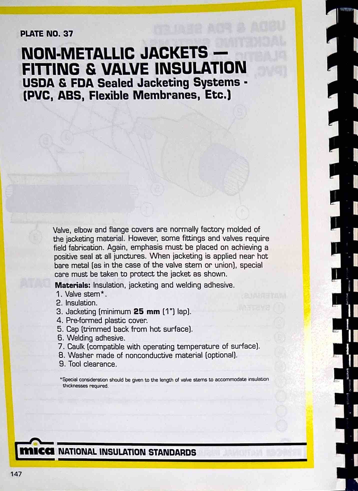
PLATE NO.
37 NON-METALLIC JACKETS — FITTING & VALVE INSULATION USDA & FDA Sealed Jacketing Systems - (PVC, ABS, Flexible Membranes, Etc.) Valve.
elbow and flange covers are normally factory molded of the jacketing material.
However, some fittings and valves require field fabrication.
Again, emphasis must be placed on achieving a positive seal at all junctures.
When jacketing is applied near hot bare metal (as in the case of the valve stem or union), special care must be taken to protect the jacket as shown.
Materials: Insulation, jacketing and welding adhesive.
I.
Valve stem* 2.
Insulation.
a.
Jacketing (minimum 25 mm (1 lap).
4.
Pre-formed plastic cover.
5.
Cap (trimmed back from hot surface).
6.
Welding adhesive.
7.
Caulk (compatible with operating temperature of surface).
8.
Washer made of nonconductive material (optional).
9.
Tool clearance.
*Spectal consideration should be yen to the length of valve stems to accommodate insulation thicknesses required muca NATIONAL INSULATION STANDARDS 147
Page 156
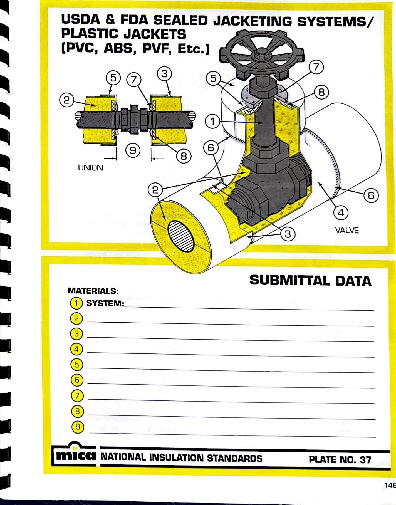
USDA & FDA SEALED JACKETING SYSTEMS/ PLASTIC JACKETS (PVC, ABS, PVF, Etc.) UNION MATERIALS: SYSTEM: 8 VALVE SUBMITTAL DATA muco NATIONAL INSULATION STANDARDS PLATE NO.
37 14E
Page 157
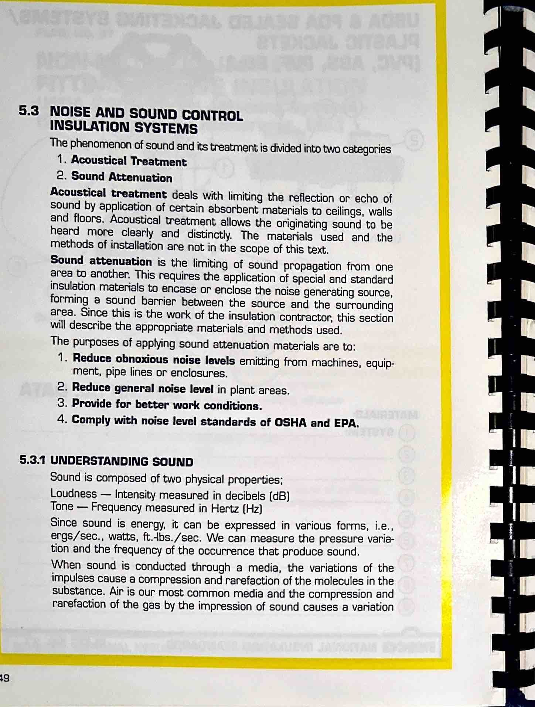
5.3 N0EE AND SOUND CONTROL INSULATION SYSTEMS The phenomenon of sound and is divided into categories 1.
Acoustical Treatment 2.
Sound Attenuation Acoustical treatment deals with limiting the reflection or echo of sound by application of certain absorbent materials to ceilings, walls and floors.
Acoustical treatment allows the originating sound to be heard more clearly and distinctly.
The materials used and the methods of installation are not in the scope of this text.
Sound attenuation is the limiting of sound propagation from one area to another.
This requires the application of special and standard insulation materials to encase or enclose une noise generating source, forming a sound barrier beüeen the source and the surrounding area.
Since this is the work of the insulation contractor, this section will describe the appropriate materials and methods used.
The purposes of applying sound atenuation materials are to: 1.
Reduce obnoxious noise levels emiting from machines, equip- ment, pipe lines or enclosures.
2.
Reduce general noise level in plant areas.
3.
Provide for better work conditions.
4.
Comply with noise level standards of OSHA and EPA.
5.3.1 UNDERSTANDING SOUND Sound is composed of two physical properties; Loudness — Intensity measured in decibels (dB) Tone — Frequency measured in Hertz (Hz) Since sound is energy, it can be expressed in various forms, i.e., ergs/sec., wats, ft.-lbs./sec.
We can measure the pressure varia- tion and the frequency of the occurrence that produce sound.
When sound is conducted through a media, the variations of the impulses cause a compression and rarefaction of the molecules in the substance.
Air is our most common media and the compression and rarefaction of the gas by the impression of sound causes a variation
Page 158
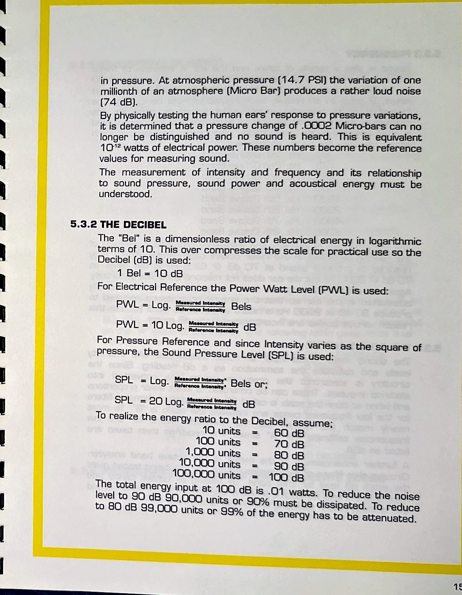
in pressure.
At atmospheric pressure (14.7 PS!) the variation of one millionth of an atmosphere (Micro Bar) produces a rather loud noise (74 dB).
By physically testing the human ears' response to pressure variations, it is determined that a pressure change of .0002 Micro-bars can no longer be distinguished and no sound is heard.
This is equivalent 1012 watts of electrical power.
These numbers become the reference values for measuring sound.
The measurement of intensity and frequency and its relationship to sound pressure, sound power and acoustical energy must be understood.
5.3.2 THE DECIBEL The "Bel" is a dimensionless ratio of electrical energy in logarithmic terms of 10.
This over compresses the scale for practical use so the Decibel (dB) is used: 1 Bei = 10 dB For Electrical Reference the Power Watt Level (PWL) is used: PWL = 10 Log.
dB R•fe.n— For Pressure Reference and since Intensity varies as the square of pressure, the Sound Pressure Level (SPL) is used: SPL = 20 Log.
dB To realize the energy ratio to the Decibel, assume; 10 units 100 units 1,000 units 10.000 units 100.000 units 60 dB 70 dB 80 dB 90 dB - 100 dB The total energy input at 100 dB is .01 watts.
To reduce the noise level to 90 dB 90,000 units or 90% must be dissipated.
To reduce to 80 dB 99.000 units or 99% of the energy has to be attenuated.
Page 159
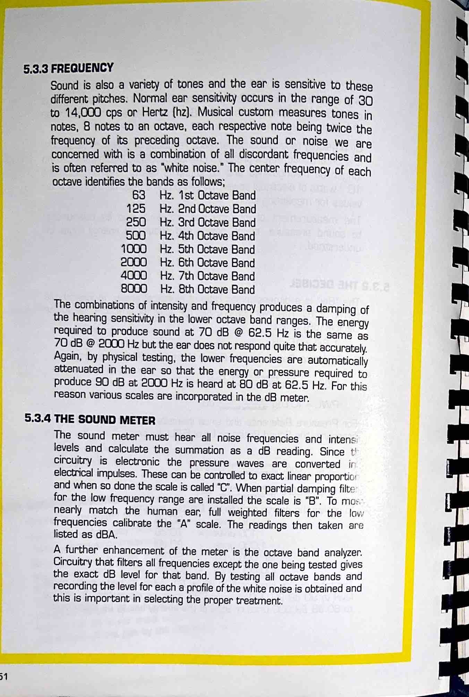
5.3.3 FREaUENCY Sound is also a variety of tones and the ear is sensitive to these different pitches.
Normal ear sensitMty occurs in the range of 80 to 14,000 cps or Hertz (hz).
Musical custom measures tones in notes, B notes to an octave, each respective note being twice the frequency of its preceding octave.
The sound or noise we are concerned with is a combination of all discordant frequencies and is often referred to as "white noise.n The center frequency of each octave identifies the bands as follows; 63 Hz.
1st Octave Band 125 Hz.
2nd Octave Band 250 Hz.
3rd Octave Band 500 Hz.
4th Octave Band 1000 Hz.
5th Octave Band 2000 Hz.
6th Octave Band 4000 Hz.
7th Octave Band 8000 Hz.
8th Octave Band The combinations of intensity and frequency produces a damping of the hearing sensitivity in the lower octave band ranges.
The energy required to produce sound at 70 dB @ 62.5 Hz is the same as 70 dB @ 2000 Hz but the ear does not respond quite that accurately.
Again, by physical testing, the lower frequencies are automatically attenuated in the ear so that the energy or pressure required to produce 90 dB at 2000 Hz is heard at 80 dB at 62.5 Hz.
For this reason various scales are incorporated in the dB meter.
5.3.4 THE SOUND METER The sound meter must hear all noise frequencies and intens levels and calculate the summation as a dB reading.
Since circuitry is electronic the pressure waves are converted ele&ical impulses.
These can be conb•olled to exact linear proporti0!
and when so done the scale is called "C".
When partial damping filte• for the low frequency range are installed the scale is "B".
To mos.
nearly match the human ear, full weighted filters for the low frequencies calibrate the "A" scale.
The readings then taken are listed as dBA.
A further enhancement of the meter is the octave band analyzer.
Circuitry that filters all frequencies except the one being tested gives the exact dB level for that band.
By testing all octave bands and recording the level for each a profile of the white noise is obtained and this is important in selecting the proper treatment.
51
Page 160
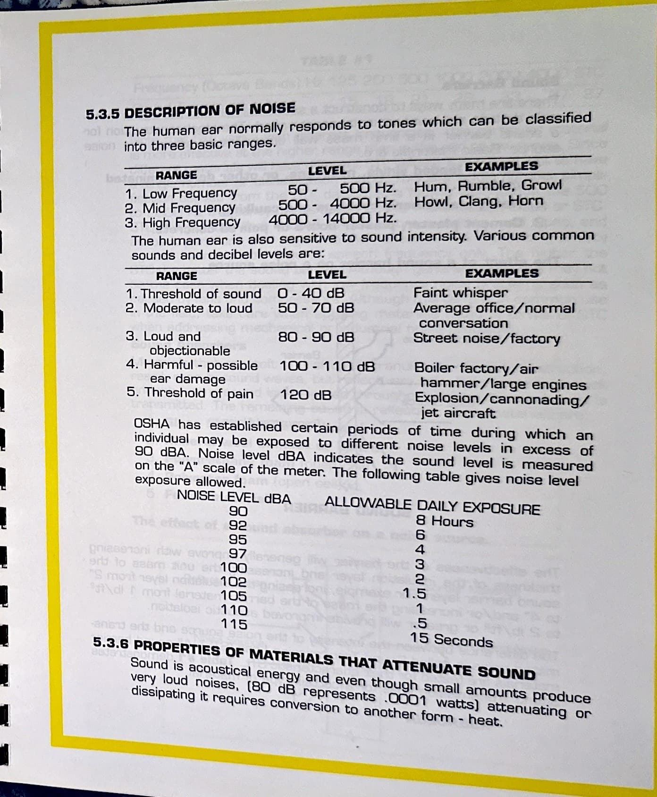
5.3.5 DESCRIPTION OF NOISE The human ear normally responds to tones which can be classified into three basic ranges.
RANGE 1.
Low Frequency EXAMPLES LEVEL 50 - 500 Hz.
Hum, Rumble, Growl 500- 4000 Hz.
Howl, Clang, Horn 2.
Mid Frequency 3.
High Frequency 4000 - 14000 Hz.
The human ear is also sensitive to sound intensity.
Various common sounds and decibel levels are: LEVEL RANGE 1 .
Threshold of sound O - 40 dB 2.
Moderate to loud 50 - 70 dB 3.
Loud and objectionable 80 - 90 dB 4.
Harmful - possible 100 - 1 IO dB ear damage 120 dB 5.
Threshold of pain EXAMPLES Faint whisper Average office/ normal conversation Street noise/factory Boiler factory/air hammer/ large engines Explosion/cannonading/ jet aircraft OSHA has established certain periods of time during which an individual may be exposed to different noise levels in excess of 90 dBA.
Noise level dBA indicates the sound level is measured on the "A" scale of the meter.
The following table gives noise level exposure allowed.
NOISE LEVEL dBA ALLOWABLE DAILY EXPOSURE 90 92 95 97 100 102 105 110 115 8 Hours 6 4 2 1.5 .5 15 Seconds 5.3.B PROPERTIES OF MATERIALS THAT ATTENUATE SOUND Sound is acoustical energy and even though small amounts produce very loud noises, (BO dB represents .0001 watts) attenuating or dissipating it requires conversion to another form - heat,
Page 161
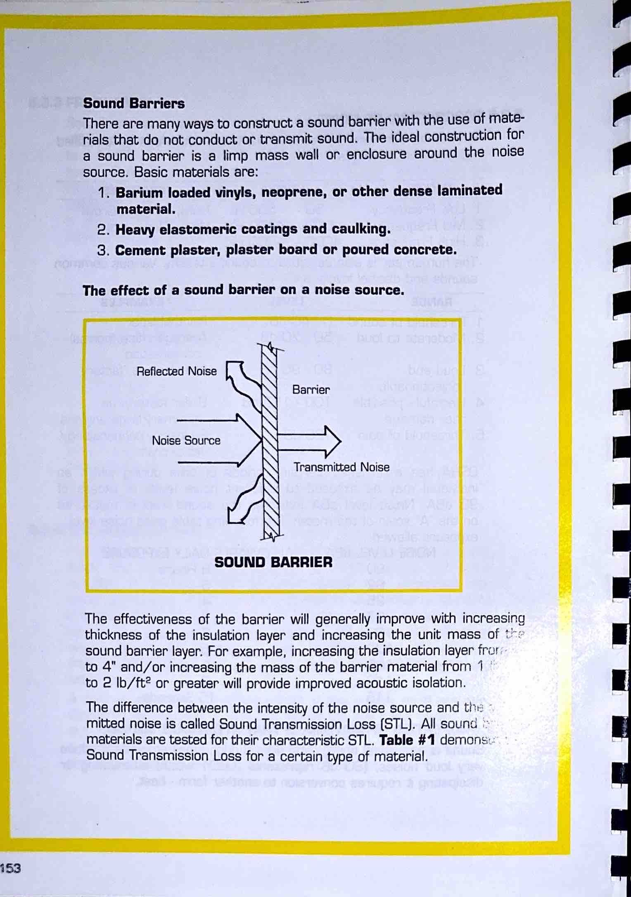
Sound Barriers There are many ways to construct a sound barrier with the use of mate- rials that do not conduct or transmit sound.
The ideal construction for a sound barrier is a limp mass wall or enclosure around the noise source.
Basic materials are: 1.
Barium loaded vinyls, neoprene, or other dense laminated material.
2.
Heavy elastomeric coatings and caulking.
3.
Cement plaster, plaster board or poured concrete.
The effect of a sound barrier on a noise source.
Reflected Noise Barrier Noise Source Transmitted Noise SOUND BARRIER The effectiveness of the barrier will generally improve with increasing thickness of the insulation layer and increasing the unit mass of sound barrier layer.
For example, increasing the insulation layer frort to 4" and/or increasing the mass of the barrier material from to 2 lb/ft2 or greater will provide improved acoustic isolation.
The difference between the intensity of the noise source and the mitted noise is called Sound Transmission Loss (STL).
All sound materials are tested for their characteristic STL.
Table #1 demonso:• Sound Transmission Loss for a certain type of material.
153
Page 162
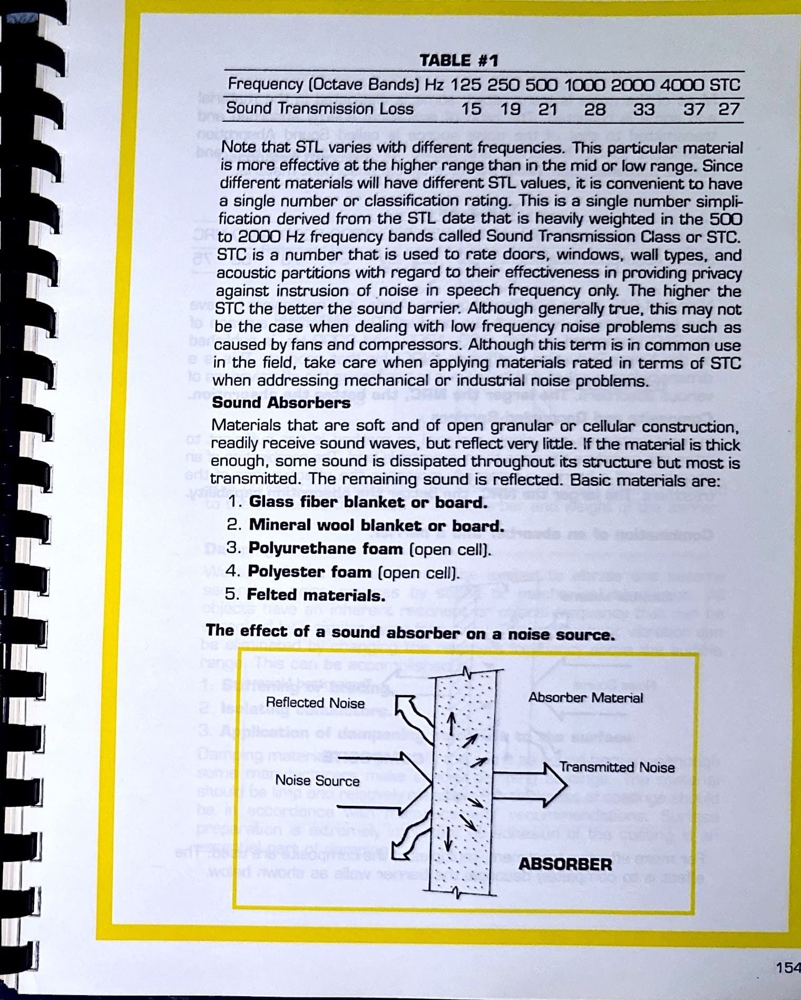
TABLE #1 Frequency (Octzve Bands) Hz 125 250 500 1000 2000 4000 STC Sound Transmission Loss 15 19 21 28 33 37 27 Note that STL varies with different frequencies.
This parücu!ar material is more effective at the higher range than in the mid or Iow range.
Since different materials will have different STL values.
it is convenient to have a single number or classification rating.
This is a single number simpli- fication derived from the STL date that is heavily weighted in the 500 to 2000 Hz frequency bands called Sound Transmission Class or STC.
STC is a number that is used to rate doors, windows, wall types, and acoustic partitions with regard to their effecüveness in providing privacy against instrusion of noise in speech frequency only.
The higher une STC the better the sound barrier.
Although generally this may not be the case when dealing with low frequency noise problems such as caused by fans and compressors.
Although this term is in common use in the field, take care when applying materials rated in tern-ts of STC when addressing mechanical or industrial noise problems.
Sound Absorbers Materials that are soft and of open granular or cellular construction, readily receive sound waves, but reflect very litle.
If the material is Ü'lick enough, some sound is dissipated throughout its structure but most is transmitted.
The remaining sound is reflected.
Basic materials are: 1.
Glass fiber blanket or board.
2.
Mineral wool blanket or board.
3.
Polyurethane foam (open cell).
4.
Polyester foam (open cell).
5.
Felted materials.
The effect of a sound absorber on a noise source.
Reflected Noise Noise Source Absorber Material Transmited Noise ABSORBER 154
Page 163
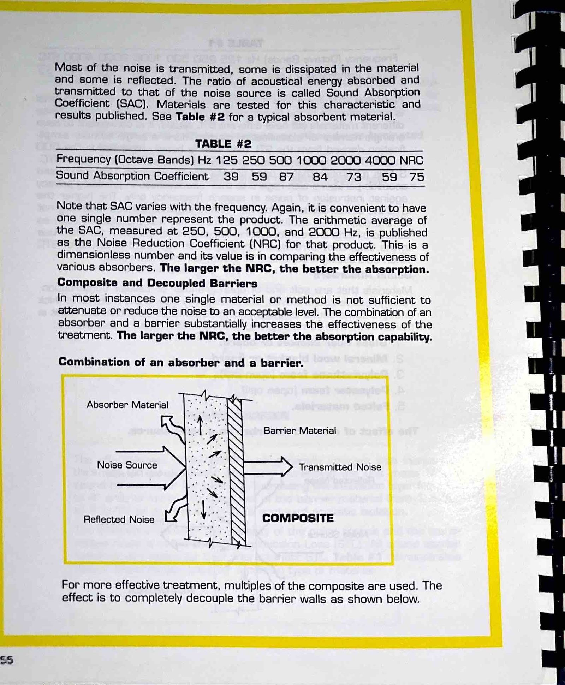
Most of the noise is transmitted, some is dissipated in the material and some is reflected.
The ratio of acoustical energy absorbed and transmitted to that of the noise source is called Sound Absorption Coefficient (SAC).
Materials are tested for this characteristic and results published.
See Table #2 for a typical absorbent material.
TABLE #2 Frequency (Octave Bands) Hz 125 250 500 1000 2000 4000 NRC Sound Absorption Coefficient ag 59 87 84 73 59 75 Note that SAC varies with the frequency.
Again, it is convenient to have one single number represent the product.
The arithmetic average of the SAC, measured at 250, 500, 1000, and 2000 Hz.
is published as the Noise Reduction Coefficient (NRC) for that product.
This is a dimensionless number and its value is in comparing the effectiveness of various absorbers.
The larger the NRC, the better the absorption.
Composite and Decoupled Barriers In most instances one single material or method is not sufficient to atenuate or reduce the noise to an acceptable level.
The combination of an absorber and a barrier substantially increases the effectiveness of the treatment.
The larger the NRC, the better the absorption capability.
Combination of an absorber and a barrier.
Absorber Material Noise Source Reflected Noise Barrier Material Transmitted Noise COMPOSITE For more effective treatment, multiples of the composite are used.
The effect is to completely decouple the barrier walls as shown below.
Page 164
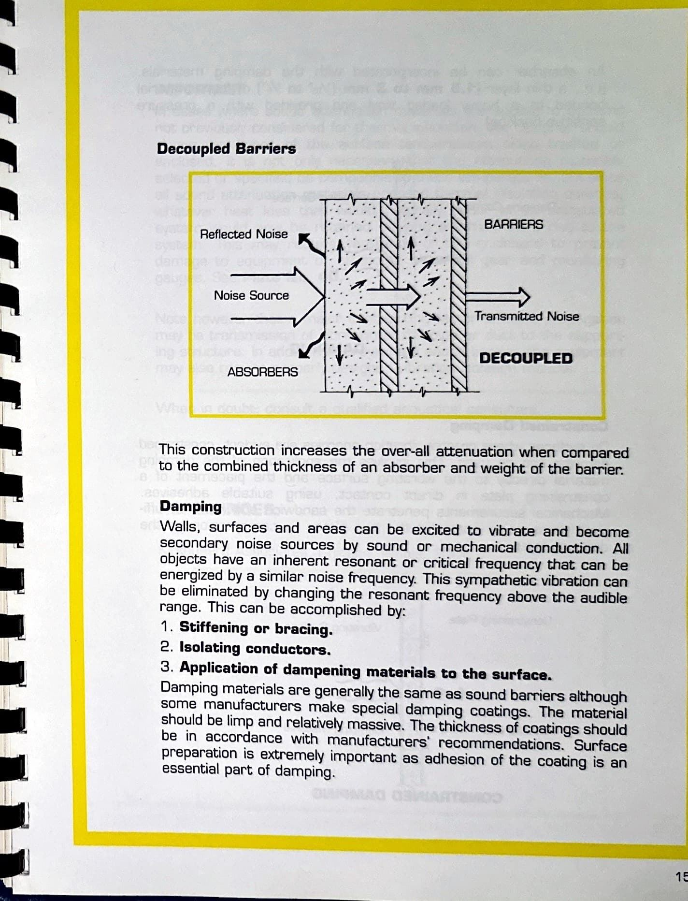
Decoupled Barriers Reflected Noise Noise Source ABSORBERS BARRIERS Transmitted Nose DECOUPLED This construction increases the over-all attenuation when compared to the combined thickness of an absorber and weight of the bamier.
Damping Walls, surfaces and areas can be excited to vibrate and become secondary noise sources by sound or mechanical conduction.
All objects have an inherent resonant or critical frequency that can be energized by a similar noise frequency.
This sympathetic vibration can be eliminated by changing the resonant frequency above the audible range.
This can be accomplished by: I.
Stiffening or bracing.
2.
Isolating conductors.
3.
Application of dampening materials to the surface.
Damping materials are generally the same as sound barriers although some manufacturers make special damping coatings.
The material should be limp and relatively massive.
The thickness of coatings should be in accordance with manufacturers' recommendations.
Surface preparation is extremely important as adhesion of the coating is an essential part of damping.
II
Page 165
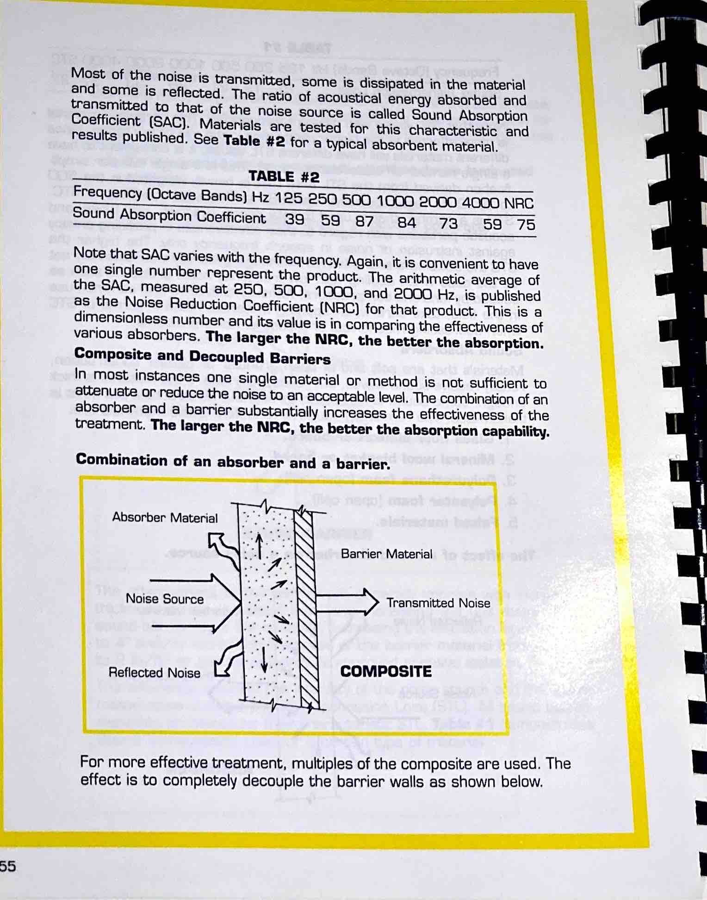
Most of the noise is transmited, some is dissipated in the material and some is reflected.
The ratio of acoustical energy absorbed and transmited to that of the noise source is called Sound Absorption Coefficient (SAC).
Materials are tested for this characteristic and results published.
See Table #2 for a typical absorbent material.
TABLE #2 Frequency (Octave Bands) Hz 125 250 500 1000 2000 4000 NRC Sound Absorption Coefficient ag 59 87 84 73 59 75 Note that SAC varies with the frequency.
Again, it is convenient to have one single number represent the product.
The arithmetic average of the SAC, measured at 250, 500, 1000, and 2000 Hz, is published as the Noise Reduction Coefficient (NRC) for that product.
This is a dimensionless number and its value is in comparing the effectiveness of various absorbers.
The larger the NRC, the better the absorption.
Composite and Decoupled Barriers In most instances one single material or method is not sufficient to atenuate or reduce tie noise to an acceptable level.
The combinaüon of an absorber and a barrier substantially increases the effectiveness of the treatment.
The larger the NRC, the better the absorption capability.
Combination of an absorber and a barrier.
Absorber Material Noise Source Reflected Noise Barrier Material Transmitted Noise COMPOSITE For more effective treatment, multiples of the composite are used.
The effect is to completely decouple the barrier walls as shown below.
5
Page 166
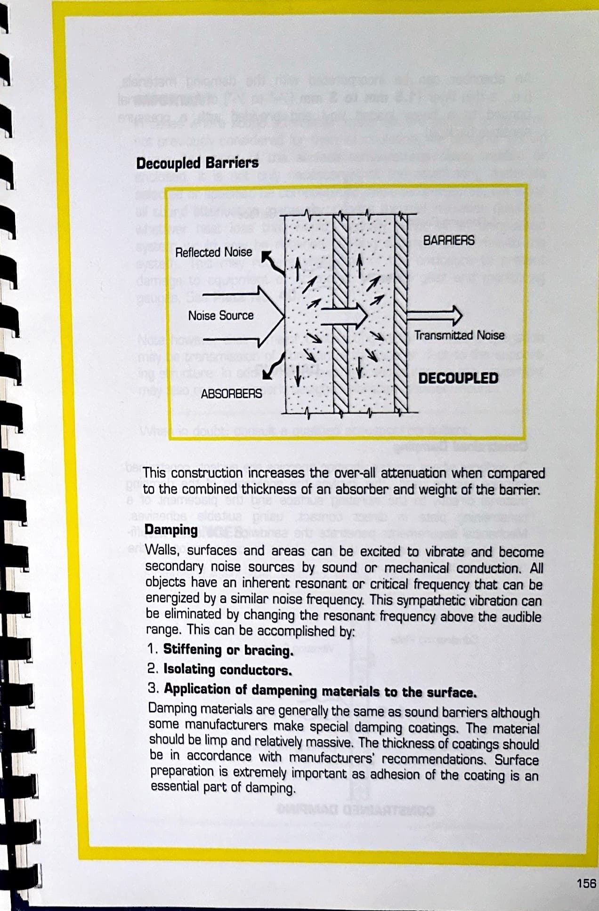
Decoupled Barriers Reflected Noise Noise Source ABSORBERS BARRIERS Transmaed Noise DECOUPLED This construction increases the over-all atenuation when compared to the combined thickness of an absorber and weight of the barrier.
Damping Walls, surfaces and areas can be excited to vibrate and become secondary noise sources by sound or mechanical conduction.
All objects have an inherent resonant or critical frequency that can be energized by a similar noise frequency.
This sympathetic vibration can be eliminated by changing the resonant frequency above the audible range.
This can be accomplished by: I.
Stiffening or bracing.
2.
Isolating conductors.
3.
Application of dampening materials to the surface.
Damping materials are generally the same as sound barriers although some manufacturers make special damping coatings, The material should be limp and relatively massive.
The thickness of coatings should be in accordance with manufacturers' recommendations.
Surface preparation is extremely important as adhesion of the coating is an essential part of damping.
156
Page 167
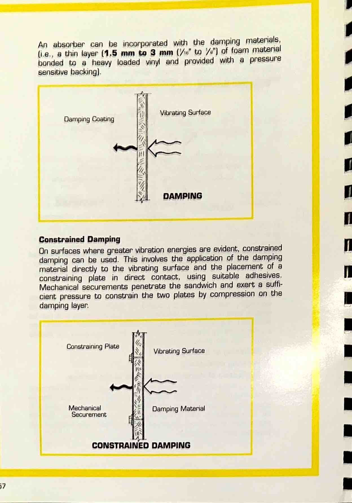
An absorber can be Incorporated With the damping materials, (i.e., a thin layer (1,5 mm Co a mm (l/t€" to 1/8") of foam matenal bonded to a heavy loaded vinyl and provided With a pressure sensitive backing).
Dampang Coating Constrained Damping Vibraung Surface DAMPING On surfaces where greater vibration energies are evident, constrained damping can be used.
This involves the application of the damping material directly to the vibrating surface and the placement of a constraining plate in direct contact, using suitable adhesives.
Mechanical securements penetrate the sandwich and exert a suffi- cient pressure to constrain the two plates by compression on the damping layer.
Constraining Plate Mechanical Securement 11 Vibrating Surface Damping Matenal CONSTRAINED DAMPING
Page 168
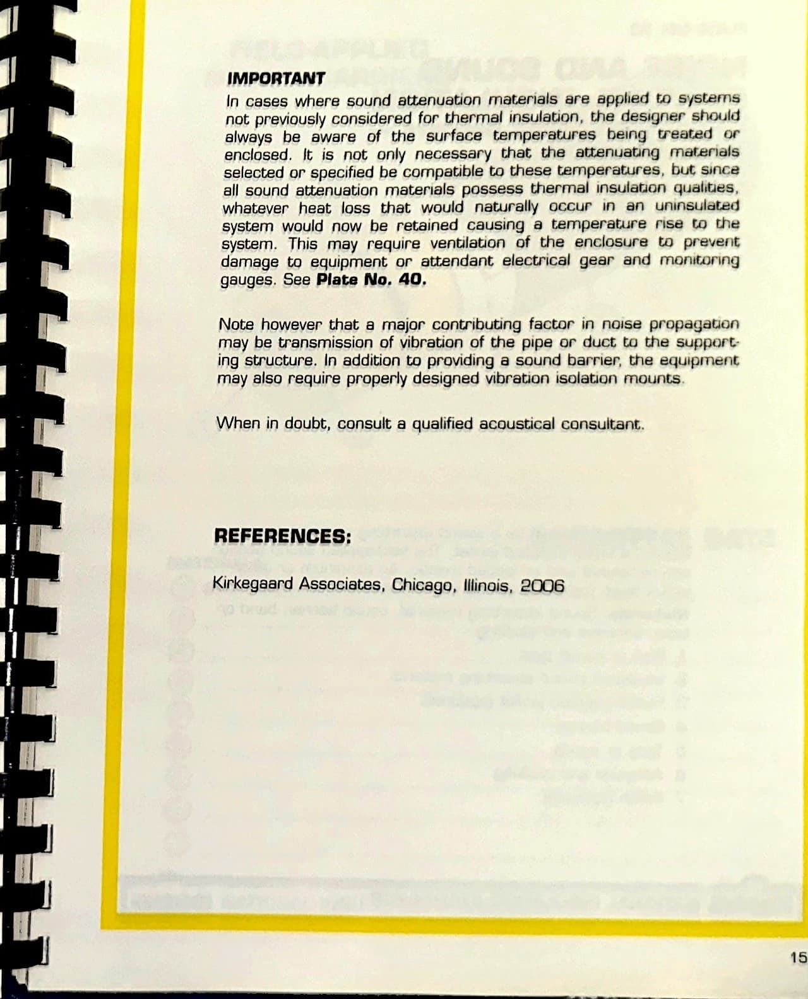
JMPORTANT In cases where sound atiznuatjon matenals are applied to systems not previously considered for thermal Insulation, the desjgner should always be aware of the surface temperatures being treated or enclosed.
Jt is not only necessary that the atxenuaong mersrjels selected or specified be compatible to these tamperatures, but sjnce all sound aWenuatlon materials possess thermal Insulanon quaiibes, whatever heat loss that would naturally occur jn an uninsulated system would now be retained causing a temperature nse to the system.
This may require ventilation of the enclosure to prevent damage to equipment or attendant electrjcal gear and monmrjng gauges.
See Plate No, 40, Note however that a major contributing factor in nojse propagauon may be transmission of vibration of the pape or duct to the supporV ing structure.
In addition to providing a sound banner, the equipment, may also require properly designed vibration Isolation mounts When in doubt, consult a qualified acoustical consultant REFERENCES; Kirkegaard Associates, Chicago, Illinois, 2006 15
Page 169
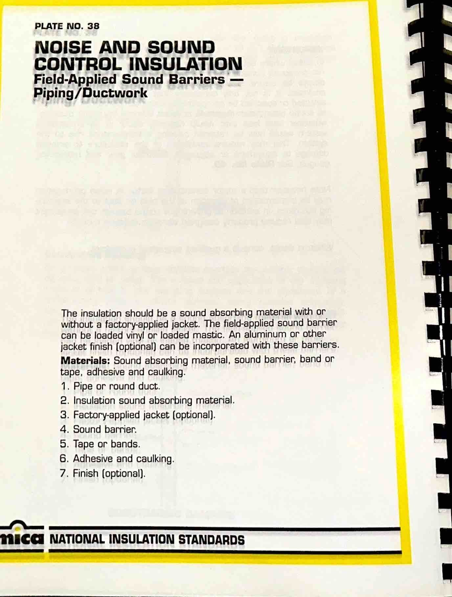
PLATE No.
3B NOISE AND SOUND CONTROL INSULATION Field-Applied Sound Barriers — Piping/Ductwork The insulation should be a sound absorbing material with or without a factory-applied jacket.
The field-applied sound barrier can be loaded vinyl or loaded mastic.
An aluminum or other jacket finish (optional) can be incorporated with these barriers.
Materials: Sound absorbing material, sound barrier, band or tape, adhesive and caulking.
I.
Pipe or round duct.
Insulation sound absorbing material.
2.
3.
Factory-applied jacket (optional).
4.
Sound barrier.
5.
Tape or bands.
6.
Adhesive and caulking.
7.
Finish (optional).
nuca NATIONAL INSULATION STANDARDS
Page 170
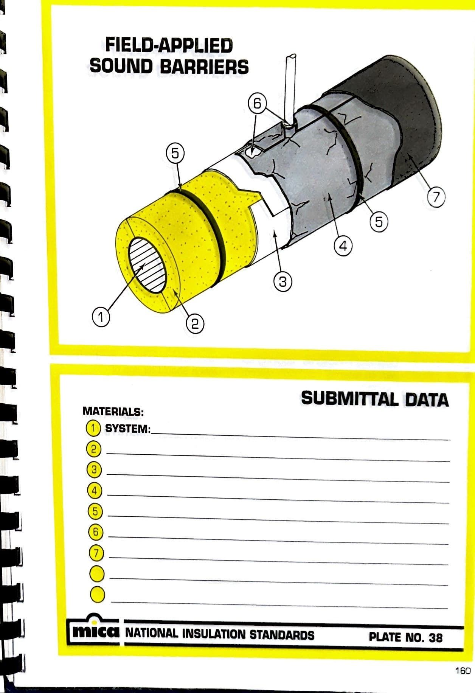
FIELD-APPLIED SOUND BARRIERS SUBMITTAL DATA MATERIALS: SYSTEM: nuca NATIONAL INSULATION STANDARDS PLATE NO.
38 160
Page 171
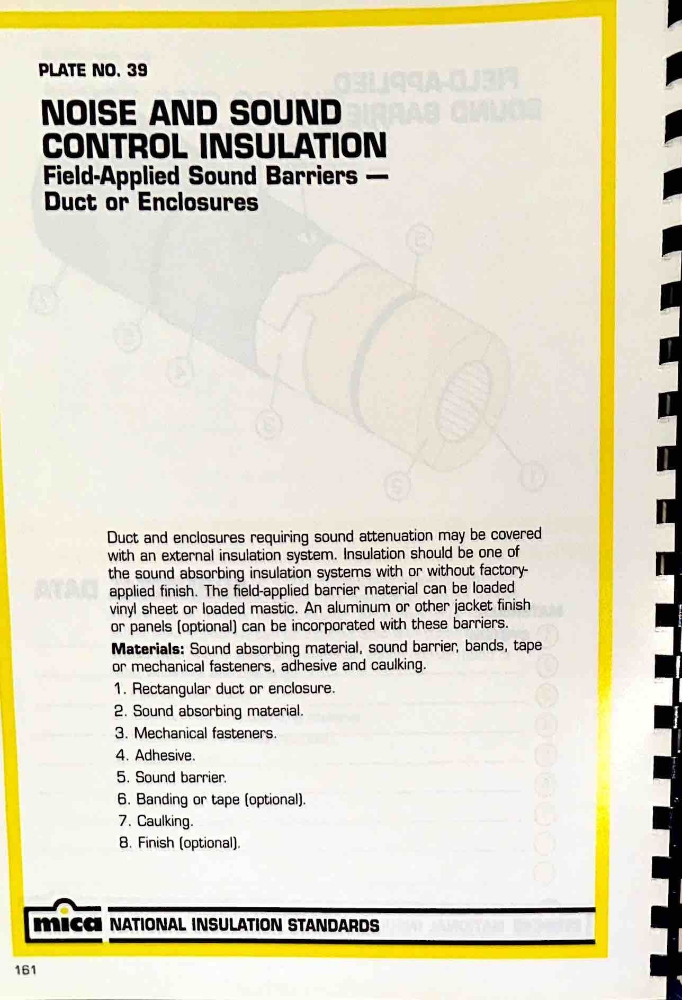
PLATE NO.
39 NOISE AND SOUND CONTROL INSULATION Field-Applied Sound Barriers — Duct or Enclosures Duct and enclosures requiring sound attenuation may be covered With an external insulation system.
Insulation should be one of the sound absorbing insulation systems with or without factory- applied finish.
The field-applied barrier material can be loaded vinyl sheet or loaded mastic.
An aluminum or other jacket finish or panels (optional) can be incorporated with these barriers.
Materials: Sound absorbing material, sound barrier, bands, tape or mechanical fasteners, adhesive and caulking.
I.
Rectangular duct or enclosure.
2.
Sound absorbing material.
a.
Mechanical fasteners.
4.
Adhesive.
5.
Sound barrier.
6.
Banding or tape (optional).
7.
Caulking.
8.
Finish (optional), muca NATIONAL INSULATION STANDARDS 161
Page 172
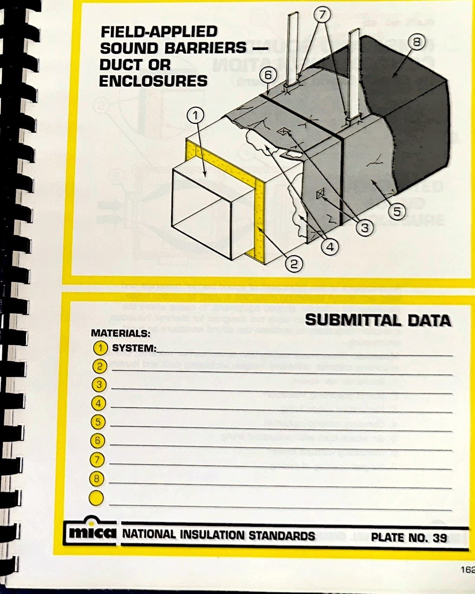
FIELD-APPLIED SOUND BARRIERS — DUCT OR ENCLOSURES SUBMITTAL DATA MATERIALS: SYSTEM: nuca NATIONAL INSULATION STANDARDS PLATE NO.
39
Page 173
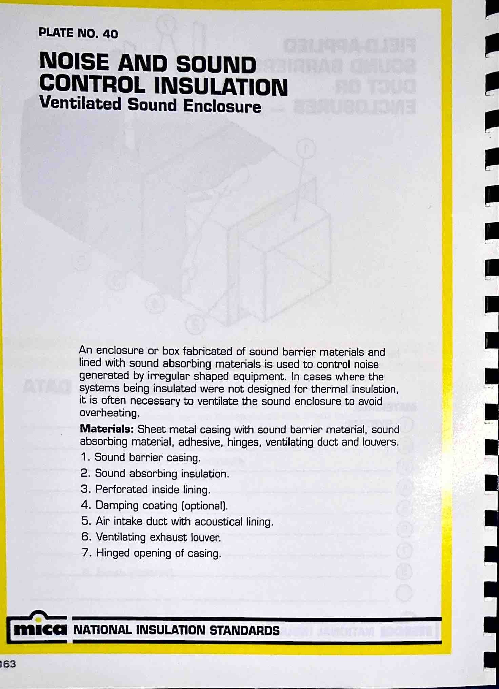
PLATE NO.
40 NOISE AND SOUND CONTROL INSULATION Ventilated Sound Enclosure An enclosure or box fabricated of sound barrier materials and lined with sound absorbing materials is used to control noise generated by irregular shaped equipment.
In cases where the systems being insulated were not designed for thermal insulation, it is oten necessary to ventilate the sound enclosure to avoid overheating.
Materials: Sheet metal casing with sound barrier material, sound absorbing material, adhesive, hinges, ventilating duct and louvers.
1.
Sound barrier casing.
2.
Sound absorbing insulation.
3.
Perforated inside lining.
4.
Damping coating (optional).
5.
Air intake duct with acoustical lining.
6.
Ventilating exhaust louver.
7.
Hinged opening of casing.
muca NATIONAL INSULATION STANDARDS
Page 174
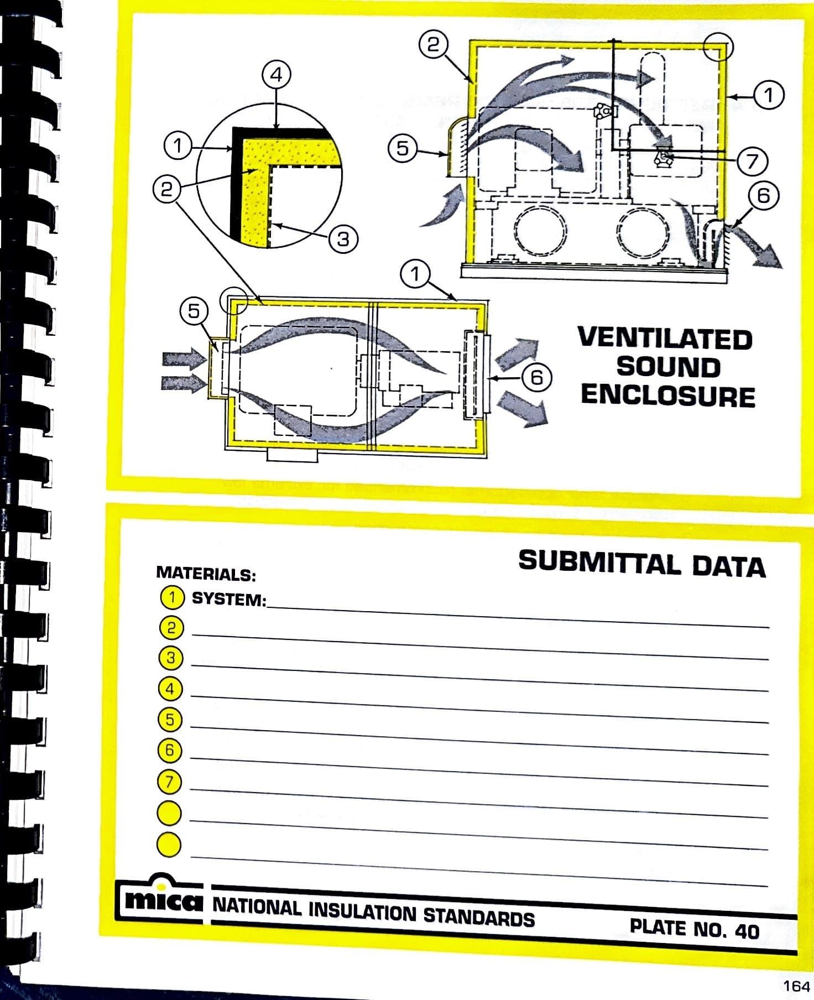
Y Ft-Ci--O 6 VENTILATED SOUND ENCLOSURE SUBMITTAL DATA MATERIALS: SYSTEM: muco NATIONAL INSULATION STANDARDS PLATE NO.
40
Page 175
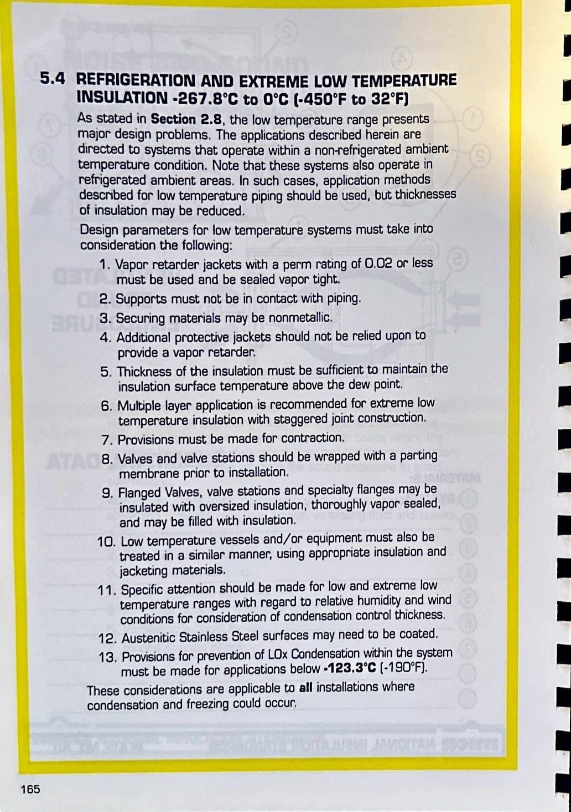
5.4 REFRIGERATION AND EXTREME LOW TEMPERATURE INSULATION .267.aoc to OOC (.4500F to 320F) As stated in Section 2.8.
the low temperature range presents major design problems.
The applications described herein are directed to systems that operate within a non-refrigerated ambient temperature condition.
Note that these systems also operate in refrigerated ambient areas.
In such cases, application methods described for low temperature pipng should be used.
but thicknesses of insulation may be reduced.
Design parameters for low temperature systems must take into consideration the following: 1.
Vapor retarder jackets With a perm rating of 0.02 or less must be used and be sealed vapor tight.
2.
Supports must not be in contact with piping.
3.
Securing materials may be nonmetallic.
4.
Additional protective jackets should not be relied upon to provide a vapor retarder.
5.
Thickness of the insulation must be sufficient to maintain the insulation surface temperature above the dew point.
6.
Multiple layer application is recommended for extreme low temperature insulation With staggered joint construction.
7.
Provisions must be made for contraction.
8.
Valves and valve stations should be wrapped With a parting membrane prior to installation.
Flanged Valves.
valve stations and specialty flanges may be g.
insulated With oversized insulation, thoroughly vapor sealed, and may be filled With insulation.
IO.
Low temperature vessels and/or equipment must also be treated in a similar manner, using appropriate insulation and jacketing materials.
11.
Specific attention should be made for low and extreme low temperature ranges With regard to relative humidity and wind conditions for considerat.ion of condensation control thickness.
12.
Austenitic Stainless Steel surfaces may need to be coated.
13.
Provisions for prevention of LOX Condensation within the system must be made for applications below •123.30C (-1 GOOF).
These considerations are applicable to all installations where condensation and freezing could occur, 165
Page 176
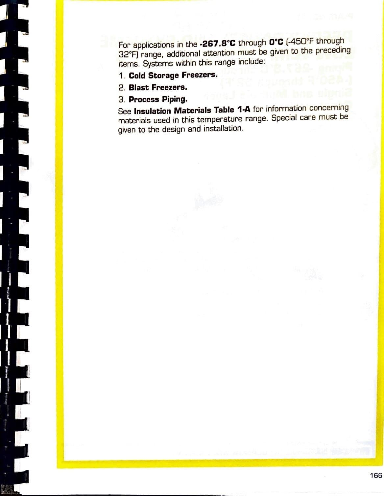
For applications in the •267.80C through OOC (-4500F through 320F) range, additional attention must be grven to the preceding Items.
Systems wrthin this range include: 1 .
Cold Storage Freezers.
2.
Blast Freezers.
3.
Process Piping.
See Insulation Materials Table I-A for information concerning materials used In this temperature range.
Special care must be given to the design and installation.
166
Page 177
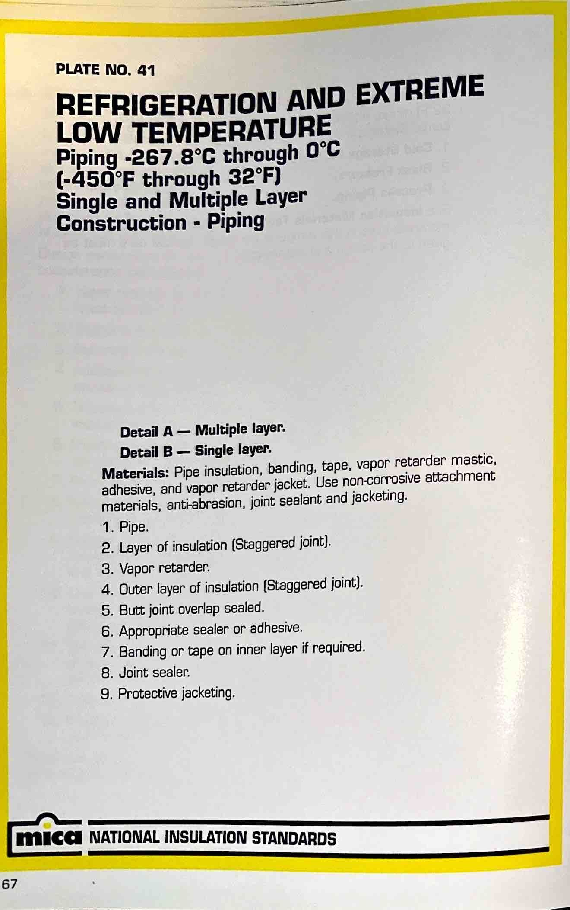
PLATE No.
41 REFRIGERATION AND EXTREME LOW TEMPERATURE Piping -267.80C through OOC (-4500F through 320F) Single and Multiple Layer Construction - Piping Detail A — Multiple layer.
Detail B — Single layer.
Materials: Pipe insulation, banding, tape, vapor retarder mastic, adhesive, and vapor retarder jacket.
Use non-corrosive attachment materials, anti-abrasion, joint sealant and jacketing.
1.
Pipe.
2.
Layer of insulation (Staggered joint).
8.
Vapor retarder.
4.
Outer layer of insulation (Staggered joint).
5.
Butt joint overlap sealed.
6.
Appropriate sealer or adhesive.
7.
Banding or tape on inner layer if required.
8.
Joint sealer.
9.
Protective jacketing.
muca NATIONAL INSULATION STANDARDS
Page 178
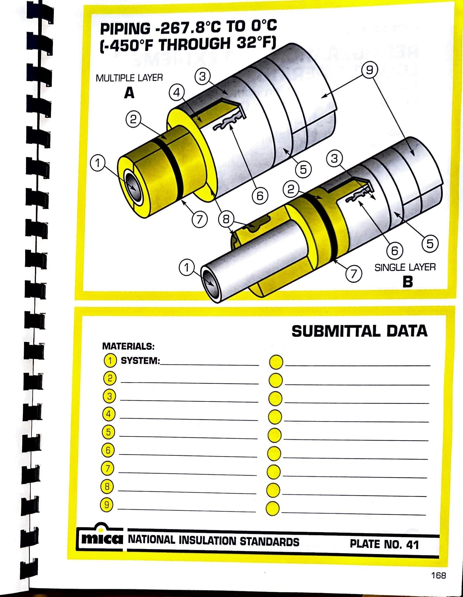
PIPING -267.80c TO OOC (-4500F THROUGH 320F) MULTIPLE LAYER 7 MATERIALS: SYSTEM: 8 SINGLE LAYER SUBMITTAL DATA mnca NATIONAL INSULATION STANDARDS PLATE NO.
41 168
Page 179
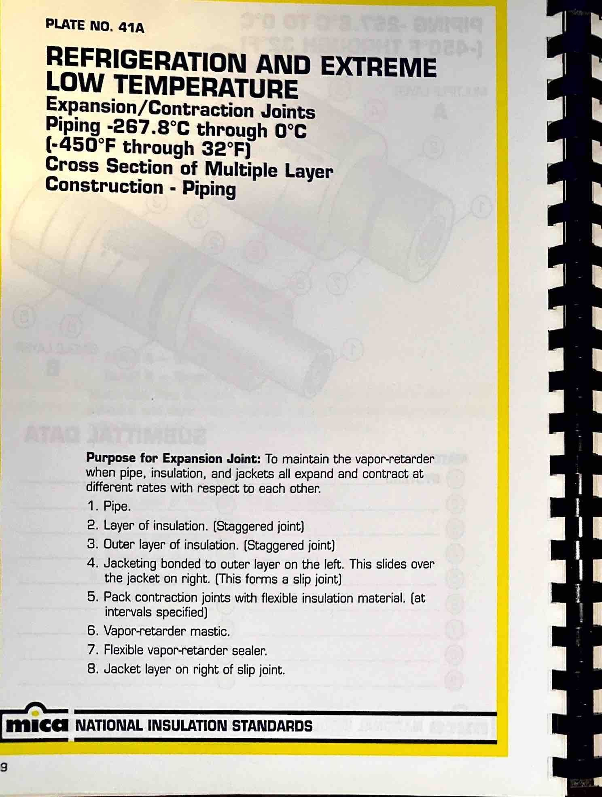
PLATE NO.
41A REFRIGERATION AND EXTREME LOW TEMPERATURE Expansion/Contraction Joints Piping -267.80C through OOC (-4500F through 320F) Cross Section of Multiple Layer Construction - Piping Purpose for Expansion Joint: To maintain the vapor-retarder when pipe, insulation, and jackets all expand and contract at different rates with respect to each other.
1.
Pipe.
2.
Layer of insulation.
(Staggered joint) 3.
Outer layer of insulation.
(Staggered joint) 4.
Jacketing bonded to outer layer on the left.
This slides over the jacket on right.
(This forms a slip joint) 5.
Pack contraction joints with flexible insulation material.
(at intervals specified) 6.
Vapor-retarder mastic.
7.
Flexible vapor-retarder sealer.
8.
Jacket layer on right of slip joint.
muca NATIONAL INSULATION STANDARDS
Page 180
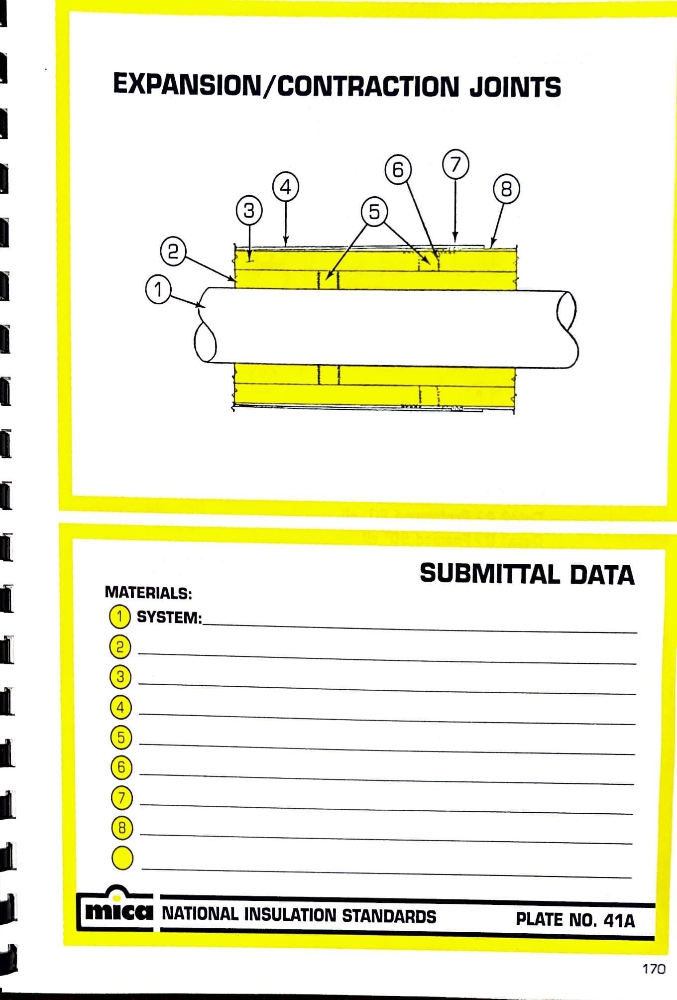
EXPANSION/CONTRACTION JOINTS SUBMITTAL DATA MATERIALS: SYSTEM: muca NATIONAL INSULATION STANDARDS PLATE NO.
41A 170
Page 181
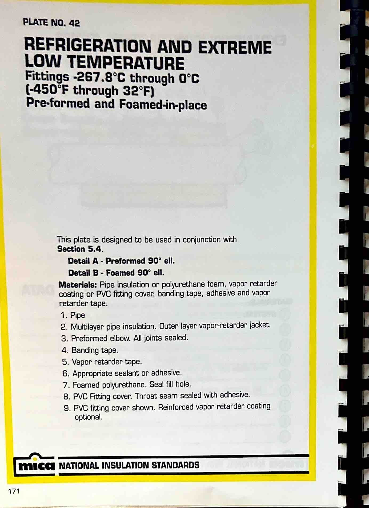
PLATE NO.
42 REFRIGERATION AND EXTREME LOW TEMPERATURE Fittings -267.80C through OOC (.4500F through 320F) Pre•formed and Foamed-in-place This plate is designed to be used in conjunction with Section 5.4.
Detail A • Preformed SOO ell.
Detail B • Foamed 900 ell.
Materials: Pipe insulation or polyurethane foam, vapor retarder coating or PVC fiting cover, banding tape.
adhesive and vapor retarder tape.
1.
Pipe 2.
Multilayer pipe insulation.
Outer layer vapor-retarder jacket.
3.
Preformed elbow.
All joints sealed.
4.
Banding tape.
5.
Vapor retarder tape.
6.
Appropriate sealant or adhesive.
7.
Foamed polyurethane.
Seal fill hole.
8, PVC Fang cover.
Throat seam sealed with adhesive.
9.
PVC fitting cover shown.
Reinforced vapor retarder coating optional.
muca NATIONAL INSULATION STANDARDS 171
Page 182
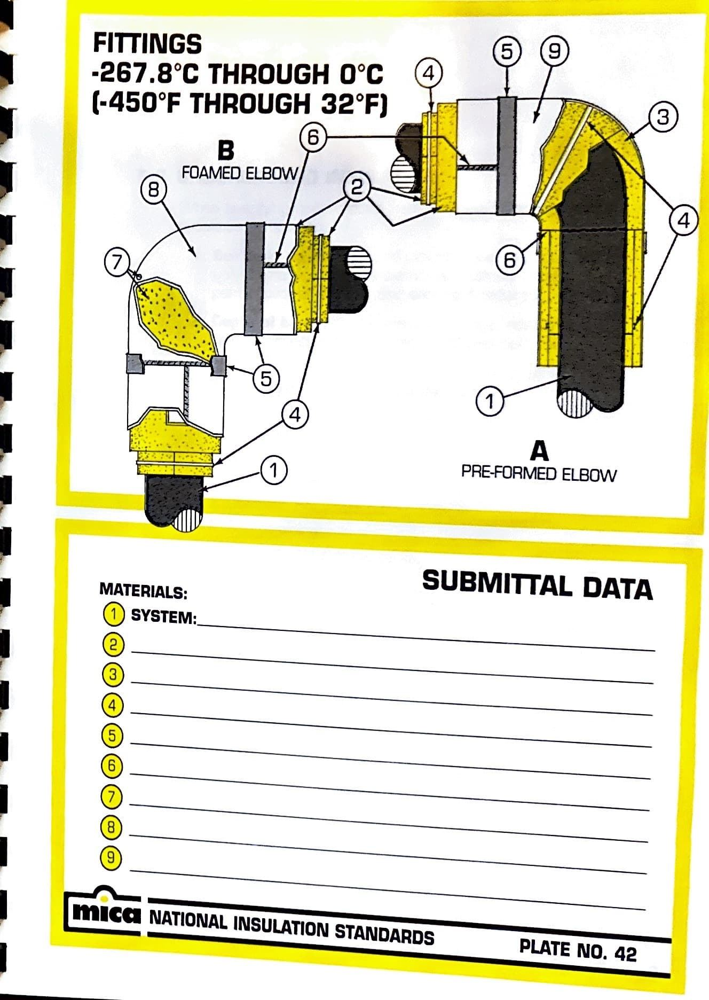
FITTINGS -267.80c THROUGH OOC (-4500F THROUGH 320F) FOAMED ELBOW MATERIALS: SYSTEM: 4 PRE-FORMED ELBOW SUBMITTAL DATA muca NATIONAL INSULATION STANDARDS PLATE NO.
42
Page 183
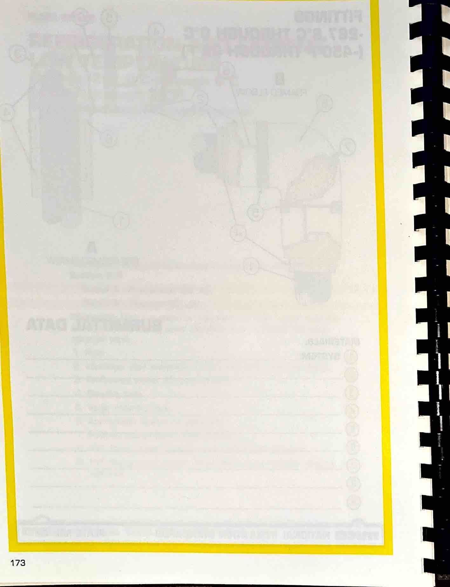
173
Page 184
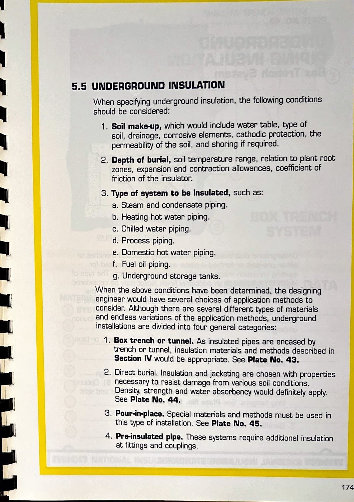
5.5 UNDERGROUND INSULATION When specifying underground insulation, the following conditions should be considered: 1.
Soil make-up, which would include water table, type of soil, drainage, corrosive elements, cathodic protection, the permeability of the soil, and shoring if required.
2.
Depth of burial, soil temperature range, relation to plant root zones, expansion and contraction allowances, coefficient of friction of the insulator.
3.
Type of system to be insulated, such as: a.
Steam and condensate piping.
b.
Heating hot water piping.
c.
Chilled water piping.
d.
Process piping.
e.
Domestic hot water piping.
f.
Fuel oil piping.
g.
Underground storage tanks.
When the above conditions have been determined, the designing engineer would have several choices of application methods to consider.
Although there are several different types of materials and endless variations of the application methods, underground installations are divided into four general categories: 1.
2.
3.
4.
Box trench or tunnel.
As insulated pipes are encased by trench or tunnel, insulation materials and methods described in Section IV would be appropriate.
See Plate No.
43.
Direct burial.
Insulation and jacketing are chosen with properties necessary to resist damage from various soil conditions.
Density.
strength and water absorbency would definitely apply.
See Plate No.
44.
Pour-in-place.
Special materials and methods must be used in this type of installation.
See Plate No.
45.
Pre-insulated pipe.
These systems require additional insulation at fittings and couplings.
174
Page 185
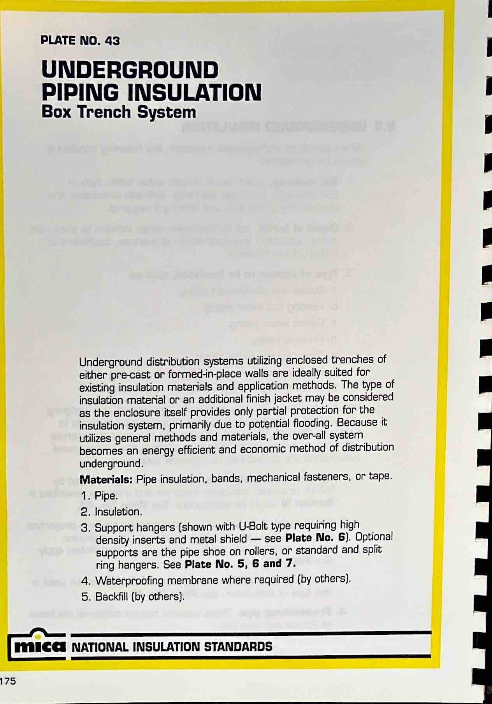
PLATE NO.
43 UNDERGROUND PIPING INSULATION Box Trench System Underground distribution systems utilizing enclosed trenches of either pre-cast or formed-in-place walls are ideally suited for existing insulation materials and application methods.
The type of insulation material or an additional finish jacket may be considered as the enclosure itself provides only partial protection for the insulation system, primarily due to potential flooding.
Because it utilizes general methods and materials, the over-all system becomes an energy efficient and economic method of distribution underground.
Materials: Pipe insulation, bands, mechanical fasteners, or tape.
1.
Pipe.
2.
Insulation.
3.
Support hangers (shown with U-Bolt type requiring high density inserts and metal shield — see Plate No.
6).
Optional supports are the pipe shoe on rollers, or standard and split ring hangers.
See Plate No.
5, 6 and 7.
4.
Waterproofing membrane where required (by others).
5.
Backfill (by others).
nuca NATIONAL INSULATION STANDARDS 175
Page 186
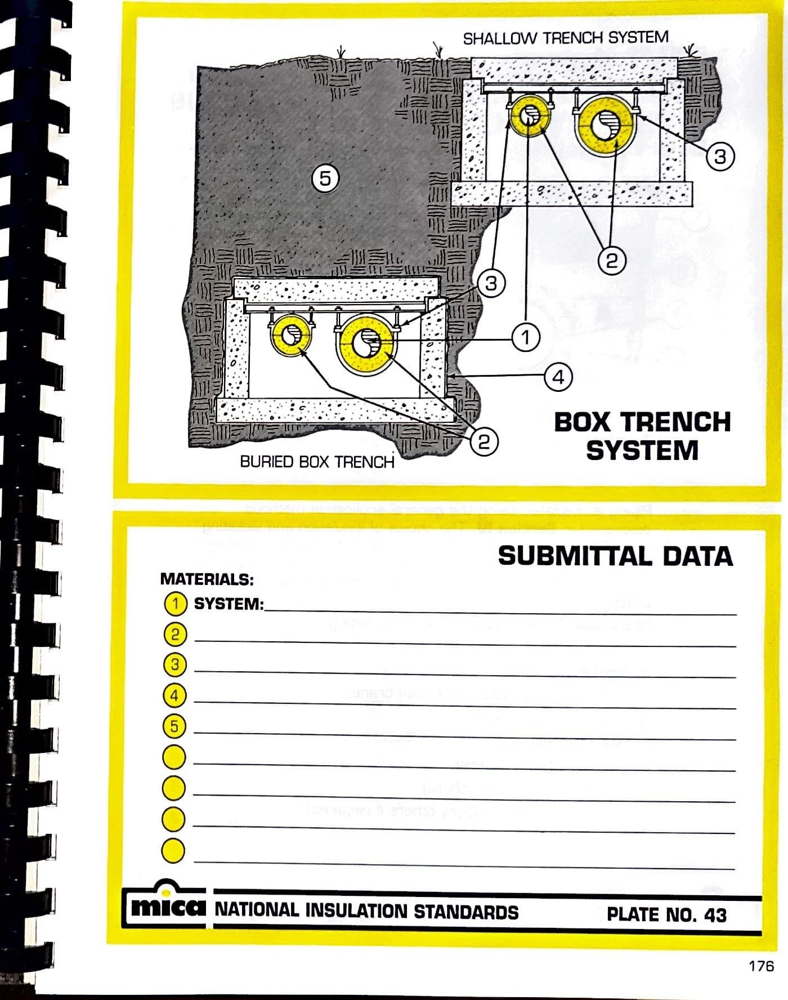
SHALLOW TRENCH SYSTEM [ ovi BOX TRENCH SYSTEM BURIED BOX TRENCH SUBMITTAL DATA MATERIALS: SYSTEM: m•ca NATIONAL INSULATION STANDARDS PLATE NO.
43 176
Page 187
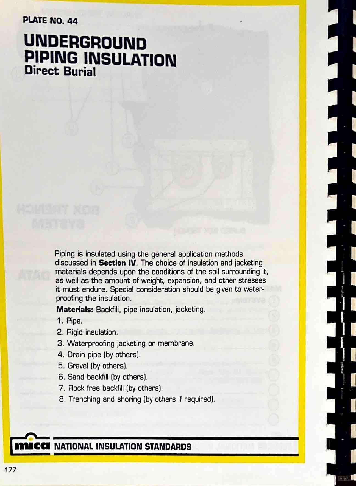
PLATE NO.
44 UNDERGROUND PIPING INSULATION Direct Burial Piping is insulated using the general application methods discussed in Section IV.
The choice of insulation and jacketing materials depends upon the conditions of the soil surrounding it, as well as the amount of weight, expansion, and other stresses it must endure.
Special consideration should be given to water- proofing the insulation.
Materials: Backfill, pipe insulation, jacketing.
Pipe.
2.
Rigid insulation.
3.
Waterproofing jacketing or membrane.
4.
Drain pipe (by others).
5.
Gravel (by others).
6.
Sand backfill (by others).
7.
Rock free backfill (by others).
8.
Trenching and shoring (by others if required).
muca NATIONAL INSULATION STANDARDS 177
Page 188
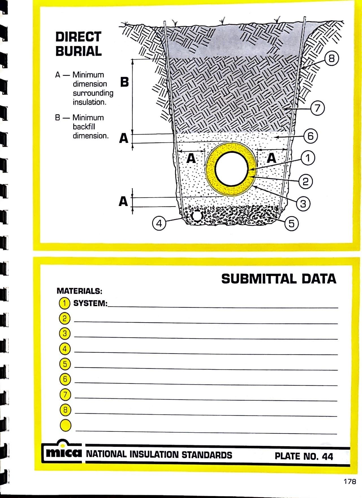
DIRECT BURIAL A — Minimum dimension surrounding insulation.
B — Minimum backfill dimension.
MATERIALS: SYSTEM: SUBMMAL DATA muca NATIONAL INSULATION STANDARDS PLATE NO.
44 178
Page 189
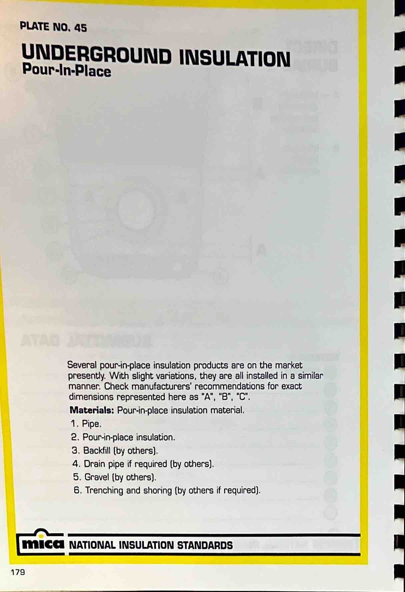
PLATE NO.
45 UNDERGROUND INSULATION Pour-ln•PIace Several pour-in-place insulation products are on the market presently.
With slight variations, they are all installed in a similar manner.
Check manufacturers' recommendations for exact dimensions represented here as A , B , C .
Materials: Pour-in-place insulation material.
1.
Pipe.
2.
Pour-in-place insulation.
3.
Backfill (by others).
4.
Drain pipe if required (by others).
5.
Gravel (by others).
6.
Trenching and shoring (by others if required).
muca NATIONAL INSULATION STANDARDS 179
Page 190
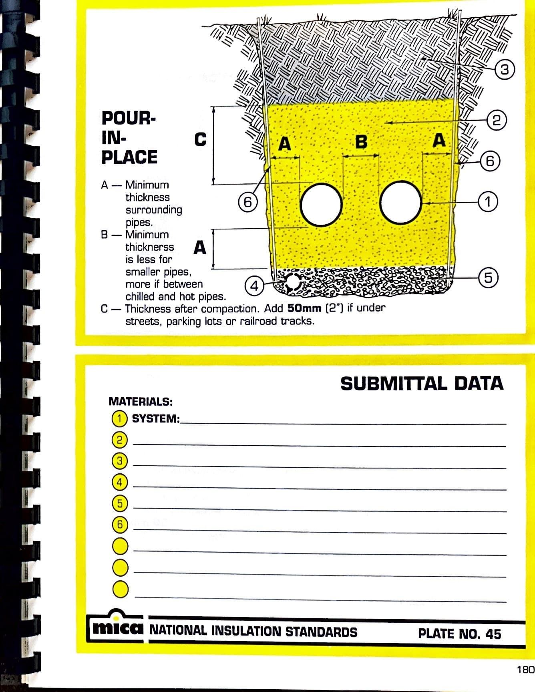
POUR.
PLACE A — Minimum thickness surrounding pipes.
B — Minimum thicknerss A is less for smaller pipes, more if between chilled and hot pipes.
C — Thickness after compaction.
Add 50mm (2") if under streets, parking lots or railroad tracks.
SUBMITTAL DATA MATERIALS: SYSTEM: m•ca NATIONAL INSULATION STANDARDS PLATE NO.
45 180
Page 191
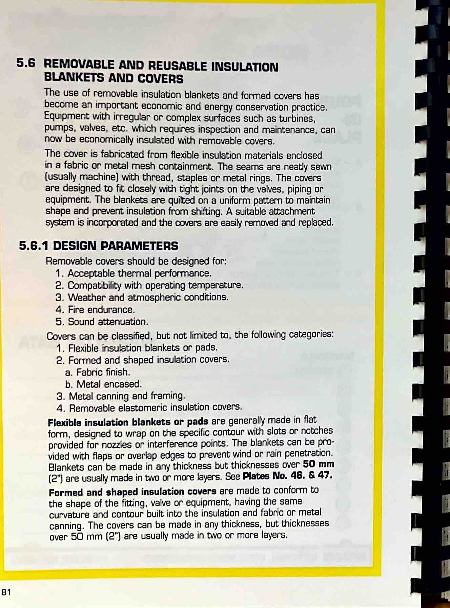
5.6 REMOVABLE AND REUSABLE INSULATION BLANKETS AND COVERS The use of removable insulation blankets and formed covers has become an important economic and energy conservation practice.
Equipment With irregular or complex surfaces such as turbines, pumps, valves, etc.
which requires inspection and maintenance, can now be economically insulated with removable covers.
The cover is fabricated from flexible insulation materials enclosed in a fabric or metal mesh containment.
The seams are neatly sewn (usually machine) with thread, staples or metal rings.
The covers are designed to fit closely wit) tight joints on the valves, piping or equipment.
The are quitted on a uniform pattern to maintain shape and prevent insulation from shifting.
A suitable attachment system is incorporated and tie covers are easily removed and replaced.
5.6.1 DESIGN PARAMETERS Removable covers should be designed for: 1.
Acceptable thermal performance.
2.
Compatibility with operating temperature.
3.
Weather and atmospheric conditions.
4.
Fire endurance.
5.
Sound atenuation.
Covers can be classified, but not limited to, the following categories: 1.
Flexible insulation blankets or pads.
2.
Formed and shaped insulation covers.
a.
Fabric finish.
b.
Metal encased.
3.
Metal canning and framing.
4.
Removable elastomeric insulation covers.
Flexible insulation blankets or pads are generally made in flat form, designed to wrap on the specific contour with slots or notches provided for nozzles or interference points.
The blankets can be pro- vided with flaps or overlap edges to prevent wind or rain penetration.
Blankets can be made in any thickness but thicknesses over 50 mm (2") are usually made in b,N0 or more layers.
See Plates No.
46.
& 47.
Formed and shaped insulation covers are made to conform to the shape of the fitting, valve or equipment, having the same curvature and contour built into the insulation and fabric or metal canning.
The covers can be made in any thickness, but thicknesses over 50 mm (2") are usually made in two or more layers.
81
Page 192
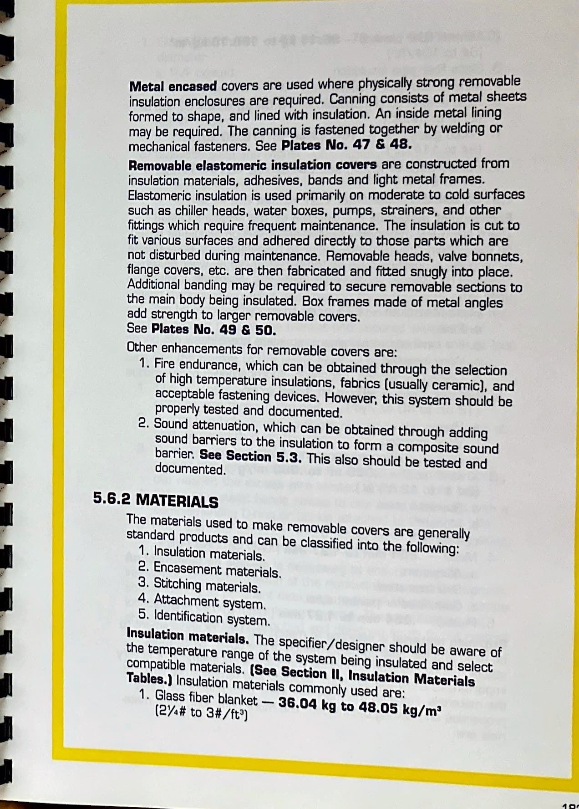
Metal encased covers are used where physically strong removable insulation enclosures are required.
Canning consists of metal sheets formed to shape, and lined with insulation.
An inside metal lining may be required.
The canning is fastened together by welding or mechanical fasteners.
See Plates No.
47 S 48.
Removable elastomeric insulation covers are constructed from insulation materials, adhesives, bands and light metal frames.
Elastomeric insulation is used primarily on moderate to cold surfaces such as chiller heads, water boxes, pumps, strainers, and other fittings which require frequent maintenance.
The insulation is cut to fit various surfaces and adhered directly to those parts which are not disturbed during maintenance.
Removable heads, valve bonnets, flange covers, etc.
are then fabricated and fitted snugly into place.
Additional banding may be required to secure removable sections to the main body being insulated.
Box frames made of metal angles add strength to larger removable covers.
See Plates No.
49 & 50.
Other enhancements for removable covers are: 1.
Fire endurance, which can be obtained through the selection of high temperature insulations, fabrics (usually ceramic), and acceptable fastening devices.
However, this system should be properly tested and documented.
2.
Sound attenuation, which can be obtained through adding sound barriers to the insulation to form a composite sound barrier.
See Section 5.3.
This also should be tested and documented.
5.6.2 MATERIALS The materials used to make removable covers are generally standard products and can be classified into the following: I.
Insulation materials.
2.
Encasement materials.
a.
Stitching materials.
4.
Attachment system.
5.
Identification system.
Insulation materials, The specifier/designer should be aware of the temperature range of the system being insulated and select compatible materials.
(See Section II, Insulation Materials Tables.) Insulation materials commonly used are: I.
Glass fiber blanket — 36.04 kg to 48.05 kg/ma (21/4# to 3#/ft3)
Page 193
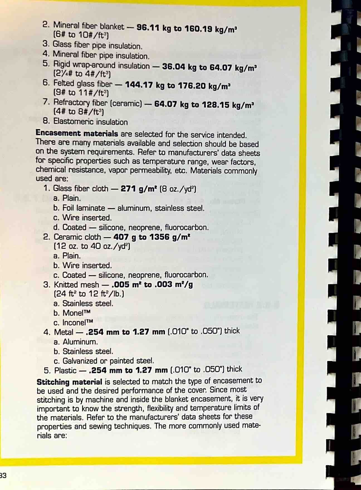
2.
Mineral fiber blanket — 96.11 kg to 160.19 kg/ma to IO#/ft3) 3.
Glass fiber pipe insulation.
4.
Mineral fiber pipe insulation.
5.
Rigid wrap-around insulation o— 36.04 kg to 64.07 kg/m3 (2'/4# to 4#/ft3) 6.
Felted glass fiber 144.17 kg to 176.20 kg/ma to ll#/ftä) 7.
Refractory fiber (ceramic) — 64.07 kg to 128.15 kg/ma to 8#/ft3) B.
Elastomeric insulation Encasement materials are selected for the service intended.
There are many materials available and selection should be based on the system requirements.
Refer to manufacturers' data sheets for specific properties such as temperature range, wear factors, chemical resistance, vapor permeabiliW.
etc.
Materials commonly used are: 1.
Glass fiber cloth — 271 g/me (8 oz./yd2) a.
Plain.
b.
Foil laminate — aluminum, stainless steel.
c.
Wire inserted.
d.
Coated — silicone, neoprene, fluorocarbon.
2.
Ceramic cloth — 407 g to 1356 g/m2 (12 oz.
to 40 oz./yd2) a.
Plain.
b.
Wire inserted.
c.
Coated — silicone, neoprene, fluorocarbon.
3.
Knitted mesh — .005 me to .003 rn2/g (24 ft2 to 12 ft?/lb.) a.
Stainless steel.
b.
MonelTM c.
InconelTM 4.
Metal — .254 mm to 1.27 mm (.010" to .050") thick a.
Aluminum.
b.
Stainless steel.
c.
Galvanized or painted steel.
5.
Plastic — .254 mm to 1.27 mm (.010" to .050") thick Stitching material is selected to match the type of encasement to be used and the desired performance of the cover.
Since most stitching is by machine and inside the blanket encasement, it is very important to know the strength, flexibility and temperature limits of the materials.
Refer to the manufacturers' data sheets for these properties and sewing techniques.
The more commonly used mate- rials are: 33 II
Page 194
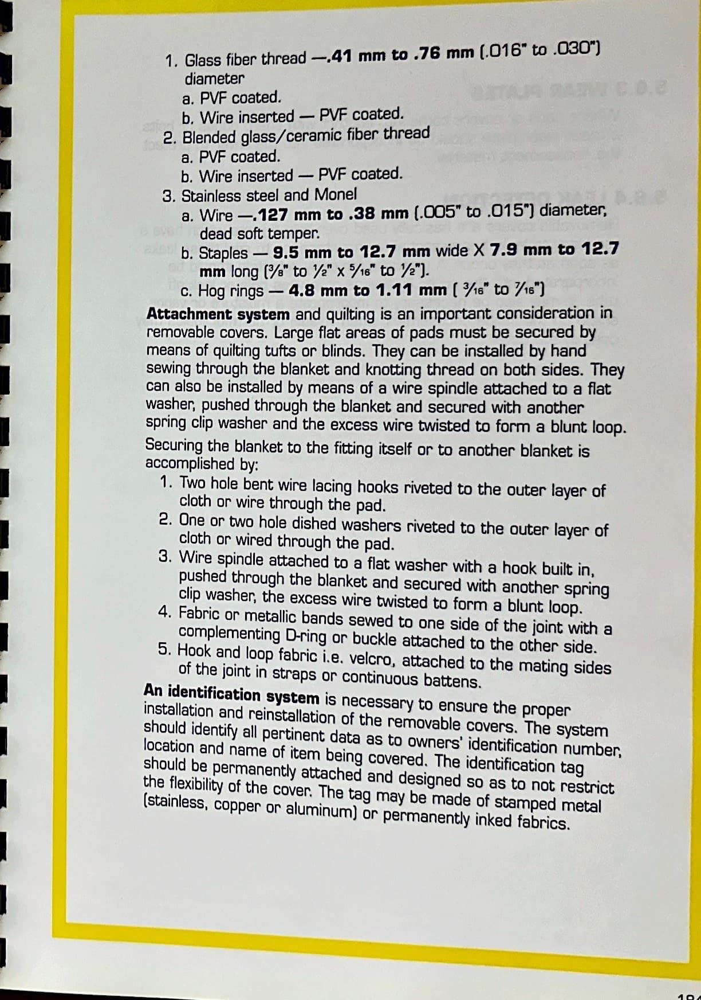
1.
Glass fiber thread —.41 mm to .76 mm (.016* to .030") diameter a.
PVF coated.
b.
Wire inserted — PVF coated.
2.
Blended glass/ceramic fiber thread a.
PVF coated.
b.
Wire inserted — PVF coated.
3.
Stainless steel and Monel a.
Wire —.127 mm to .38 mm (.005* to .0150 diameter, b.
staples — 9.5 mm to 12.7 mm wide X 7.9 mm to 12.7 mm long (3/8" to 1/2" x 5/16" to 1/2").
c.
Hog rings — 4.8 mm to 1.11 mm ( 3/16" to 7/1') Attachment system and quilting is an important consideration in removable covers.
Large flat areas of pads must be secured by means of quilting tufts or blinds.
They can be installed by hand sewing through the blanket and knotting thread on both sides.
They can also be installed by means of a wire spindle attached to a flat washer, pushed through the blanket and secured with another spring clip washer and the excess wire twisted to form a blunt loop.
Securing the blanket to the fitting itself or to another blanket is accomplished by: 1.
Two hole bent wire lacing hooks riveted to the outer layer of cloth or wire through the pad.
2.
One or two hole dished washers riveted to the outer layer of cloth or wired through the pad.
3.
Wire spindle attached to a flat washer with a hook built in, pushed through the blanket and secured with another spring clip washer, the excess wire twisted to form a blunt loop.
4.
Fabric or metallic bands sewed to one side of the joint with a complementing D-ring or buckle atached to the other side.
5.
Hook and loop fabric i.e.
vetcro, attached to the mating sides of the joint in straps or continuous battens.
An identification system is necessary to ensure the proper installation and reinstallation of the removable covers.
The system should identify all pertinent data as to owners' identification number, location and name of item being covered.
The identification tag should be permanently attached and designed so as to not restrict the flexibility of the cover.
The tag may be made of stamped metal (stainless, copper or aluminum) or permanently inked fabrics.
Page 195
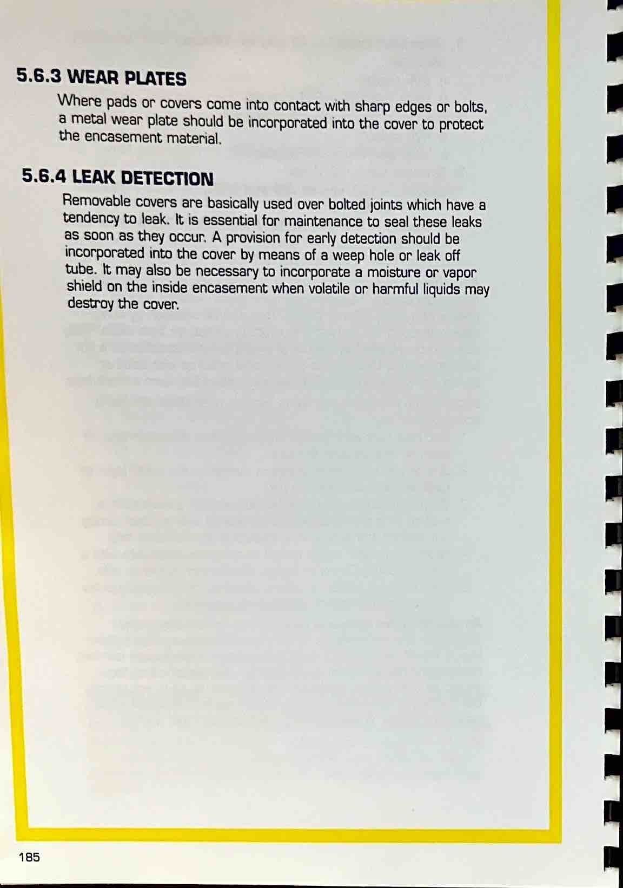
5.6.a WEAR PLATES Where pads or covers come into contact With sharp edges or bolts, a metal wear plate should be incorporated into the cover to protect the encasement material.
5.6.4 LEAK DETECTION Removable covers are basically used over bolted joints which have a tendency to leak.
It is essential for maintenance to seal these leaks as soon as they occur.
A provision for early detection should be incorporated into the cover by means of a weep hole or leak off tube.
It may also be necessary to incorporate a moisture or vapor shield on the inside encasement when volatile or harmful liquids may destroy cover.
185
Page 196
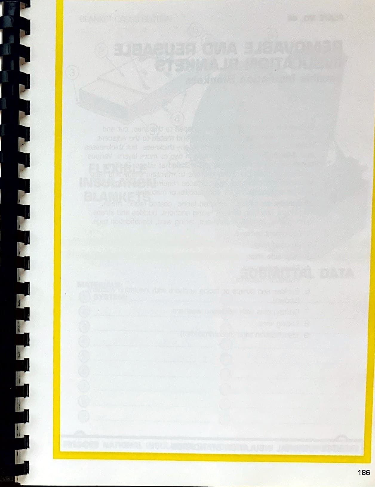
186
Page 197
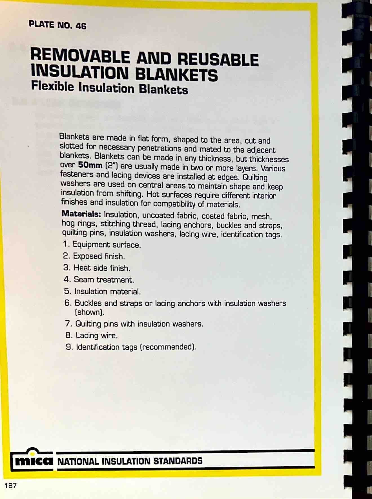
PLATE NO.
4B REMOVABLE AND REUSABLE INSULATION BLANKETS Flexible Insulation Blankets Blankets are made in flat form, shaped to the area, cut and slotted for necessary penetrations and mated to the adjacent blankets.
Blankets can be made in any thickness, but thicknesses over 50mm (2) are usually made in Duo or more layers.
Various fasteners and lacing devices are installed at edges.
Quilting washers are used on central areas to maintain shape and keep insulation from shifting.
Hot surfaces require different interior finishes and insulation for compatibility of materials.
Materials: Insulation, uncoated fabric, coated fabric, mesh, hog rings, stitching thread, lacing anchors, buckles and straps, quilting pins, insulation washers, lacing wire.
identification tags.
1.
Equipment surface.
2.
Exposed finish.
3.
Heat side finish.
4.
Seam treatment.
5.
Insulation material.
6.
Buckles and straps or lacing anchors with insulation washers (shown).
7.
Quilting pins with insulation washers.
B.
Lacing wire.
g.
Identification tags (recommended).
muca NATIONAL INSULATION STANDARDS 187
Page 198
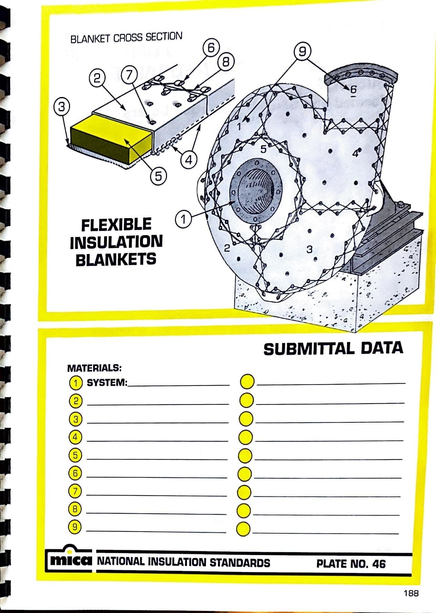
BLANKET CROSS SECTION FLEXIBLE INSULATION BLANKETS MATERIALS: SYSTEM: 1 SUBMITTAL DATA nuca NATIONAL INSULATION STANDARDS PLATE NO.
46 188
Page 199
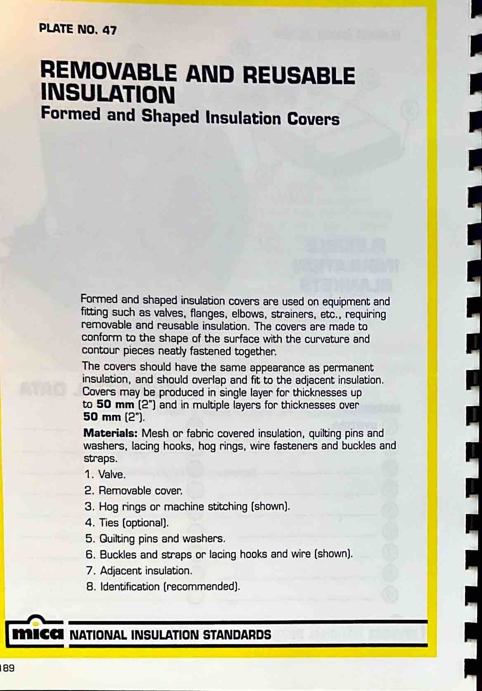
PLATE NO.
47 REMOVABLE AND REUSABLE INSULATION Formed and Shaped Insulation Covers Formed and shaped insulation covers are used on equipment and f@ng such as valves.
flanges, elbows, strainers.
etc., requiring removable and reusable insulation.
The covers are made to conform to the shape of the surface with the curvature and contour pieces neatly fastened together.
The covers should have the same appearance as permanent insulation, and should overlap and fit to the adjacent insulation.
Covers may be produced in single layer for thicknesses up to 50 mm (2") and in multiple layers for thicknesses over 50 mm (2").
Materials: Mesh or fabric covered insulation, quilting pins and washers, lacing hooks, hog rings, wire fasteners and buckles and straps.
1.
Valve 2.
Removable cover.
3.
Hog rings or machine stitching (shown).
4.
Ties (optional).
5.
Quilting pins and washers.
6.
Buckles and sü•aps or lacing hooks and wire (shown).
7.
Adjacent insulation.
Identification (recommended).
8.
nuca NATIONAL INSULATION STANDARDS 189
Page 200
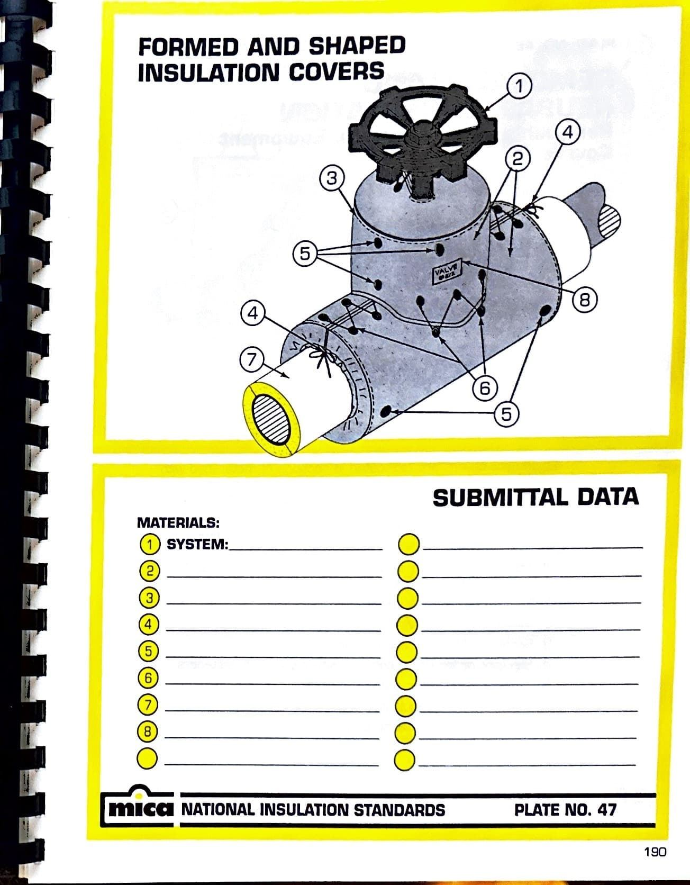
FORMED AND SHAPED INSULATION COVERS MATERIALS: SYSTEM: SUBMITTAL DATA m•ca NATIONAL INSULATION STANDARDS PLATE NO.
47 190
Page 201
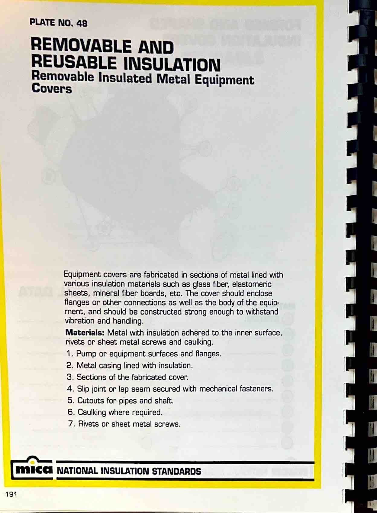
PLATE NO.
48 REMOVABLE AND REUSABLE INSULATION Removable Insulated Metal Equipment Covers Equipment covers are fabricated in sections of metal lined with various insulation materials such as glass fiber, elastomeric sheets, mineral fiber boards, etc.
The cover should enclose flanges or other connections as well as the body of the equip- ment.
and should be constructed strong enough to withstand vibration and handling.
Materials: Metal With insulation adhered to the inner surface, rivets or sheet metal screws and caulking.
1.
Pump or equipment surfaces and flanges.
2.
Metal casing lined with insulation.
3.
Sections of the fabricated cover.
4.
Slip joint or lap seam secured With mechanical fasteners.
5.
Cutouts for pipes and shaft.
6.
Caulking where required.
7.
Rivets or sheet metal screws.
muca NATIONAL INSULATION STANDARDS 191
Page 202
REMOVABLE INSULATED METAL EQUIPMENT COVERS PUMP SUBMITTAL DATA MATERIALS: O SYSTEM: mrca NATIONAL INSULATION STANDARDS PLATE NO.
48 192
Page 203
PLATE NO.
49 REMOVABLE AND REUSABLE INSULATION Elastomeric with Metal Frame Pumps or other pieces of equipment may be encased in elastomeric insulation which can be removed and reused.
A box frame is constructed of light gauge metal to which elastomeric insulation is applied.
Insulation may be adhered directly to surfaces which do not require maintenance removal.
Care should be taken to provide a tight seal where insulation IS not adhered together.
Materials: Metal angles, elastomeric insulation and adhesive.
1.
Pump or other equipment surfaces.
2.
Elastomeric insulation cut to fit metal frame with cutouts.
3.
Metal frame constructed to fit base of pump.
This section is not removable.
4.
Removable top may be constructed on a frame or form fitted as shown.
5.
Adhesive.
nuca NATIONAL INSULATION STANDARDS 193
Page 204
REMOVABLE AND REUSABLE INSULATION SUBMITTAL DATA MATERIALS: SYSTEM: mra NATIONAL INSULATION STANDARDS PLATE NO.
49 194
Page 205
PLATE NO.
50 REMOVABLE AND REUSABLE INSULATION Elastomeric Removable Covers Removable covers for chiller heads, water boxes, valves, strainers, etc., may be constructed from elastomeric insulation if thermal conditions are appropriate for its use.
Covers are normally made with circumferences slightly smaller than that of the permanent insulation to insure a snug fit.
Covers for large surfaces such as water boxes may require banding for extra support.
Detail A • Chiller head and water box.
Detail B • Valve.
Detail C - Strainer Materials: Elastomeric insulation, adhesive and banding.
1.
Permanent insulation on valve or strainer.
2.
Cover constructed of collar and top piece with diameter slightly smaller than diameter of permanent insulation or flange.
3.
Adhesive.
4.
Water box or chiller flanges.
5.
Thickness of insulatlon filler equal to bolt head size.
6.
Banding for extra support (optional).
nuca NATIONAL INSULATION STANDARDS 195
Page 206
ELASTOMERIC REMOVABLE COVERS MATERIALS: SYSTEM: SUBMITTAL DATA muca NATIONAL INSULATION STANDARDS PLATE NO.
50 196